Chapter 11 포트폴리오 구성
종목별로 비중을 어떻게 배분하느냐에 따라 성과가 달라지므로, 종목의 선택 못지 않게 중요한 것이 포트폴리오를 구성하는 방법입니다. 최적 포트폴리오의 구성은 수식을 기반으로 최적화된 해를 찾습니다. 물론 엑셀의 해 찾기와 같은 기능을 사용해 간단한 형태의 최적화 구현이 가능하지만, 방대한 데이터를 다룰 경우에는 속도가 지나치게 느려지거나 계산할 수 없게 되기도 합니다.
동일한 최적화 방법을 지속적으로 사용한다면 프로그래밍을 통해 함수를 만들고, 입력 변수만 변경하는 것이 훨씬 효율적인 방법입니다. 또한 포트폴리오 최적화에 관한 좋은 패키지들이 이미 많이 나와 있으므로, 대략적인 내용만 이해하고 실제 구현은 패키지를 이용하는 것도 좋은 방법입니다.
이 CHAPTER에서는 일반적으로 많이 사용되는 최소분산 포트폴리오, 최대분산효과 포트폴리오, 위험균형 포트폴리오를 구현해보도록 합니다. 또한 실무에서 많이 사용되는 인덱스 포트폴리오를 구성하는 방법에 대해서도 살펴보겠습니다.
먼저 최소분산, 최대분산효과, 위험균형 포트폴리오 구성을 위해 글로벌 자산을 대표하는 ETF 데이터를 다운로드하겠습니다.
library(quantmod)
library(PerformanceAnalytics)
library(magrittr)
symbols = c('SPY', # 미국 주식
'IEV', # 유럽 주식
'EWJ', # 일본 주식
'EEM', # 이머징 주식
'TLT', # 미국 장기채
'IEF', # 미국 중기채
'IYR', # 미국 리츠
'RWX', # 글로벌 리츠
'GLD', # 금
'DBC' # 상품
)
getSymbols(symbols, src = 'yahoo')## [1] "SPY" "IEV" "EWJ" "EEM" "TLT" "IEF" "IYR" "RWX"
## [9] "GLD" "DBC"prices = do.call(cbind,
lapply(symbols, function(x) Ad(get(x)))) %>%
setNames(symbols)
rets = Return.calculate(prices) %>% na.omit()getSymbols() 함수를 통해 일반적으로 자산배분에서 많이 사용되는 주식과 채권, 대체자산에 해당하는 ETF 가격 데이터를 받은 후 lapply()와 Ad(), get() 함수의 조합을 통해 수정주가만을 선택하고 열의 형태로 묶어줍니다. 그 후 Return.calculate() 함수를 통해 수익률을 계산합니다.
library(tidyr)
library(dplyr)
library(corrplot)
cor(rets) %>%
corrplot(method = 'color', type = 'upper',
addCoef.col = 'black', number.cex = 0.7,
tl.cex = 0.6, tl.srt=45, tl.col = 'black',
col =
colorRampPalette(c('blue', 'white', 'red'))(200),
mar = c(0,0,0.5,0))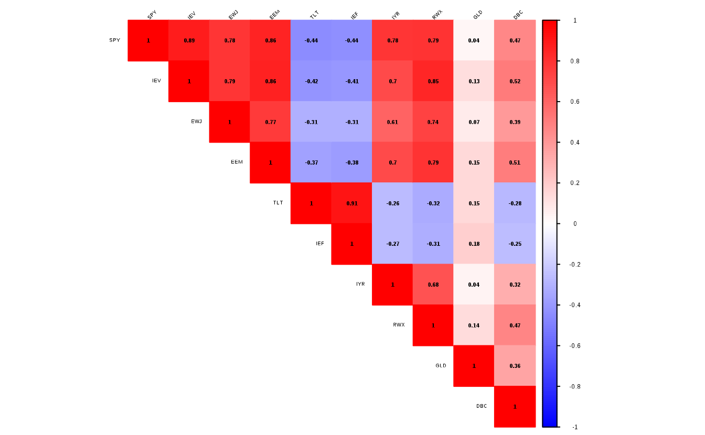
각 ETF의 수익률 간 상관관계를 살펴보면 같은 자산군 내에서는 강한 상관관계를 보이며, 주식과 채권 간에는 매우 낮은 상관관계를 보입니다. 또한 주식과 리츠 간에도 꽤 높은 상관관계를 보입니다.
포트폴리오 최적화에는 분산-공분산 행렬이 대부분 사용되며, 이는 cov() 함수를 통해 손쉽게 계산할 수 있습니다.
11.1 최소분산 포트폴리오
최소분산 포트폴리오(Minimum Variance Portfolio)는 변동성이 최소인 포트폴리오입니다. 포트폴리오의 변동성은 일반적으로 \(\sum_{i=1}^{n}\sum_{j=1}^{n}w_iw_j\sigma_{ij}\)의 형태로 표현되지만, 최적화 작업을 위해서는 행렬의 형태인 \(w'\Omega w\)로 표현하는 것이 더욱 편리합니다. 이 중 \(w\)는 각 자산들의 비중을 행렬의 형태로 나타낸 것이며, \(\Omega\)는 분산-공분산 행렬을 나타낸 것입니다. 분산-공분산 행렬은 사전에 고정되어 있는 값이므로, 각 자산들의 비중인 \(w\)를 변화시킴으로써 포트폴리오의 변동성이 최소인 지점을 찾을 수 있습니다.
최소분산 포트폴리오의 목적함수는 아래의 수식으로 표현할 수 있습니다. 이 중 \(^1/_2\)은 단지 미분했을 때 계산을 용이하게 하기 위한 장치일 뿐 결과에는 영향을 미치지 않습니다.
\[ 최소분산\,포트폴리오의\,목적함수: min\,^1/_2\,w'\Omega w \]
다만 단순히 위의 목적함수를 찾는 해를 구하면 결괏값이 음수가 나오기도 하는데 이것은 공매도를 의미합니다. 일반적으로 공매도가 불가능하다는 점과, 투자비중의 합이 100%가 되어야 한다는 점을 고려하면 아래와 같은 제약조건을 추가해야 합니다.
\[ 최소분산\,포트폴리오의\,제약조건: \sum_{i=1}^{n}w_i = 1, w_i \ge 0 \] 물론 이 외에도 각 섹터의 투자비중 합에 대한 제약조건이나 회전율에 대한 제약조건 등도 추가할 수 있습니다.
11.1.1 slsqp() 함수를 이용한 최적화
R에서 가장 손쉽게 최적화 작업을 수행하는 방법은 nloptr 패키지의 slsqp() 함수를 이용하는 것입니다. slsqp() 함수는 순차적 이차 계획(Sequential Quadratic Programming)을 이용해 해를 찾으며, 목적함수와 제약조건은 다음과 같습니다.
| 목적함수 | 제약조건 |
|---|---|
| \(min\,f(x)\) | \(b(x)\ge0, c(x)=0\) |
목적함수에서 \(f(x)\) 는 최소화하고자 하는 값, 즉 포트폴리오의 변동성입니다. 제약조건은 크게 개별 자산의 투자 비중이 0 이상인 것과, 투자 비중의 합이 1이 되도록 하는 것입니다. 첫 번째 제약조건은 자연스럽게 개별 자산의 투자비중이 0 이상인 것을 의미합니다. 두 번째 제약조건은 약간의 변형을 통해 투자비중의 합이 1이 되는 제약조건을 만들 수 있습니다. \(c(x)\)를 투자비중의 합 – 1 로 변형할 경우 -1을 우변으로 넘기면 결국 투자비중의 합 = 1의 형태로 나타낼 수 있습니다. slsqp() 함수의 구성은 다음과 같습니다.
slsqp(x0, fn, gr = NULL, lower = NULL, upper = NULL,
hin = NULL, hinjac = NULL, heq = NULL, heqjac = NULL,
nl.info = FALSE, control = list(), ...)이 중 우리가 구체적으로 입력해야 할 값은 x0, fn, hin, heq 항목 입니다.
- x0은 초기값이며, 일반적으로 모든 x에 대해 동일한 값을 입력합니다.
- fn은 최소화하고자 하는 목적함수로, 포트폴리오 변동성에 해당합니다.
- hin은 부등위 제약조건(inequality constraints)을 의미하며, 프로그래밍 내에서는 hin >= 0로 인식하며, 각 자산의 비중이 0보다 크다는 제약조건과 연결됩니다.
- heq는 등위 제약조건(equality constraints)을 의미하며, 프로그래밍 내에서는 heq == 0을 의미합니다. 투자비중의 합 - 1의 형태를 입력한다면 투자비중의 합이 1 이라는 제약조건과 연결됩니다.
표 11.2는 최소분산 포트폴리오를 구할 때 필요한 주요 변수에 대한 내용입니다.
| 변수명 | 내용 | 포트폴리오 내 변수 |
|---|---|---|
| x0 | 초기값 | 없음 |
| fn | 목적함수 | 포트폴리오 변동성 |
| hin | 부등위 제약조건 | 각 자산의 비중이 0 보다 큰 제약조건 |
| heq | 등위 제약조건 | 투자 비중의 합이 1인 제약조건 |
slsqp() 함수를 이용해 최소분산 포트폴리오를 만족하는 자산의 투자비중을 구하는 과정은 다음과 같습니다. 먼저 fn, hin, heq에 해당하는 함수들을 각각 만든 후 이를 slsqp() 함수와 결합해 최적화된 결괏값을 얻을 수 있습니다. 구체적인 과정은 아래와 같습니다.
먼저 목적함수에 해당하는 부분입니다. covmat은 사전에 계산된 분산-공분산 행렬이며, \(w\)는 각 자산의 투자비중입니다. obj는 포트폴리오의 변동성인 \(w'\Omega w\)를 계산한 것입니다. 즉, 해당 함수는 계산된 \(w\)를 바탕으로 포트폴리오의 변동성을 반환하고, 우리의 목적은 해당 값이 최소가 되도록 하는 것입니다.
\(w_i \ge 0\) 제약조건에 해당하는 부등위 제약조건입니다. 패키지 내에서는 hin >= 0 의 형태로 인식하므로, 계산된 비중인 \(w\)를 단순히 입력하기만 하면 됩니다.
\(\sum_{i=1}^{n}w_i = 1\) 제약조건에 해당하는 등위 제약조건입니다. 먼저 계산된 비중인 \(w\)들의 합계를 구한 후 해당 값에서 1을 빼주는 값을 반환하도록 합니다. 프로그래밍 내에서는 heq == 0 의 형태로 인식을 하므로 결국 (sum_w – 1) == 0, 즉 sum_w == 1의 제약조건과 동일합니다.
library(nloptr)
result = slsqp( x0 = rep(0.1, 10),
fn = objective,
hin = hin.objective,
heq = heq.objective)
print(result$par)## [1] 1.427e-01 -8.243e-19 -1.215e-17 3.376e-18
## [5] 8.500e-17 7.924e-01 5.714e-19 6.046e-19
## [9] 1.081e-17 6.491e-02## [1] 0.000009852위에서 만들어진 함수들을 바탕으로 최적화 작업을 실행합니다. 초기값인 x0에는 먼저 동일한 비중들을 입력합니다. 예제에서는 종목이 10개 이므로, x0값에는 rep(0.1, 10) 인 0.1, 0.1, 0.1, 0.1, 0.1, 0.1, 0.1, 0.1, 0.1, 0.1을 입력합니다. 최소화하고자 하는 목적함수 fn에는 위에서 구성한 objective 함수를 입력합니다. 부등위 제약조건과 등위 제약조건에도 각각 위에서 구성한 hin.objective와 heq.objective 함수를 입력합니다.
즉, 해당 함수는 초기값을 시작점으로 해 주어진 제약조건을 만족하는 해를 찾기 위해 \(w\)값들을 조정하는 작업을 반복한 후 목적함수가 최소가 되는 지점의 \(w\)를 반환합니다.
result 값 중 $par는 최적화된 지점의 해를 의미하며, 최소분산 포트폴리오를 구성하는 자산들의 투자 비중을 의미합니다. $value는 $par에서 산출된 값을 목적함수 fn에 입력하였을 때 나오는 결괏값으로써, 포트폴리오의 분산을 의미합니다.
## SPY IEV EWJ EEM TLT IEF IYR RWX
## 0.1427 0.0000 0.0000 0.0000 0.0000 0.7924 0.0000 0.0000
## GLD DBC
## 0.0000 0.0649자산들의 투자비중은 result$par를 통해 추출한 후, round() 함수를 이용해 반올림합니다. 마지막으로 이름에 종목명을 입력합니다. 계산된 비중으로 포트폴리오를 구성하면 포트폴리오의 비중이 최소가 됩니다.
11.1.2 solve.QP() 함수를 이용한 최적화
다음으로는 quadprog 패키지 내의 solve.QP() 함수를 이용해 포트폴리오 최적화를 하는 방법이 있습니다. 해당 함수는 쌍대기법(Dual Method)을 이용해 제약조건 내에서 목적함수가 최소화되는 해를 구합니다. 해당 함수의 목적함수와 제약조건은 표 11.3과 같습니다.
| 목적함수 | 제약조건 |
|---|---|
| \(min(-d^Tb+^1/_2b^TDb)\) | \(A^Tb \ge b_0\) |
최소분산 포트폴리오의 목적함수가 \(min\,^1/_2\,w'\Omega w\)로 표시된다는 점을 생각하면, 해당 함수는 매우 이해하기 쉽게 구성되어 있습니다. \(b\)를 각 개별 자산의 투자 비중인 \(w\), \(D\)를 분산-공분산 행렬인 \(\Omega\)라 생각하면, 목적함수 중 \(min\,^1/_2\,wDw\)는 최소분산 포트폴리오의 목적함수와 정확히 동일합니다. \(d\)를 0으로 생각하면 \(-d^Tb\) 또한 0이 되어 목적함수에 아무런 영향도 미치지 않습니다.
제약조건 역시 \(A^T\) 항목을 적절하게 수정한다면, 개별 자산의 투자비중이 0 이상인 것과, 투자비중의 합이 1이 되도록 만들 수 있습니다. 이에 대해서는 뒤에서 구체적으로 다루도록 합니다. solve.QP() 함수의 사용법은 아래와 같습니다.
- Dmat은 목적함수 중 \(D\)에 해당하는 행렬 부분으로서 분산-공분산 행렬과 일치합니다.
- dvec은 목적함수 중 \(d\)에 해당하는 벡터 부분이며, 포트폴리오 최적화에서는 역할이 없습니다.
- Amat은 제약조건 중 \(A^T\)에 해당하는 부분으로써, 제약조건 중 좌변에 위치하는 항목입니다. 제약조건에서 보듯이 제약조건 행렬을 구한 후 이것의 전치(Transpose) 행렬을 입력해야 하는 데 주의합니다.
- bvec은 제약조건 중 \(b_0\)에 해당하는 부분으로써, 제약조건 중 우변에 위치하는 항목입니다.
- meq는 bvec의 몇 번째까지를 등위 제약조건으로 설정할지에 대한 부분입니다.
표 11.4는 위의 내용을 요약한 것이며, 각 변수를 입력한 후 함수를 실행하면 위의 목적함수와 제약조건을 만족하는 \(b\) 값을 찾습니다.
| 변수명 | 내용 | 포트폴리오 내 변수 |
|---|---|---|
| Dmat | 목적함수 중 D | 분산-공분산 행렬 |
| dvec | 목적함수 중 d | 해당사항 없음 |
| Amat | 제약조건 (좌변) | \(\sum_{i=1}^{n}w_i, w_i\) |
| bvec | 제약조건 (우변) | 비중의 합이 1, 각 비중이 0보다 큼 |
| meq | 등위 제약조건 개수 | 1개 (비중의 합이 1) |
solve.QP() 함수를 이용해 최소분산 포트폴리오 비중을 구할 때는 Amat 항목을 제대로 입력하는 것이 가장 중요하며, 나머지 항목은 매우 손쉽게 입력이 가능합니다. 설명된 내용에 해당하는 행렬을 손으로 직접 써가며 계산해본다면 훨씬 이해하기가 쉬울 것입니다. 구체적인 과정은 아래와 같습니다.
Dmat = covmat
dvec = rep(0, 10)
Amat = t(rbind(rep(1, 10), diag(10), -diag(10)))
bvec = c(1, rep(0, 10), -rep(1, 10))
meq = 1Dmat에는 분산-공분산 행렬을 입력하며,dvec은 최소분산 포트폴리오를 구하는데는 필요한 값이 아니므로 0벡터를 입력합니다. 등위 제약조건과 부등위 제약조건(\(A^Tb \ge b_0\))을 행렬의 형태로 표현하면 다음과 같습니다.
\[ \begin{bmatrix} 1 & \dots & 1 \\ 1 & \dots & 0 \\ \vdots & \ddots & \vdots \\ 0 & \dots & 1 \\ -1 & \dots & 0 \\ \vdots & \ddots & \vdots \\ 0 & \dots & -1 \\ \end{bmatrix} \begin{bmatrix} w_1 \\ w_2 \\ \vdots \\ w_{10} \end{bmatrix} = \begin{bmatrix} w_1 + w_2 + \dots + w_{10} \\ w_1 \\ \vdots \\ w_{10} \\ -w_1 \\ \vdots \\ -w_{10} \end{bmatrix} \ge \begin{bmatrix} 1 \\ 0 \\ \vdots \\ 0 \\ -1 \\ \vdots \\ -1 \end{bmatrix} \]
이 중 맨 왼쪽 행렬의 전치행렬이 제약조건의 좌변인 Amat에 해당합니다.
\[ Amat = \begin{bmatrix} 1 & \dots & 1 \\ 1 & \dots & 0 \\ \vdots & \ddots & \vdots \\ 0 & \dots & 1 \\ -1 & \dots & 0 \\ \vdots & \ddots & \vdots \\ 0 & \dots & -1 \end{bmatrix} ^T \]
맨 오른쪽 행렬이 제약조건의 우변인 bvec에 해당합니다. \[ bvec = \begin{bmatrix} 1 \\ 0 \\ \vdots \\ 0 \\ -1 \\ \vdots \\ -1 \end{bmatrix} \]
위의 제약조건은 크게 투자비중의 합이 1인 제약조건, 최소 투자비중이 0 이상인 제약조건, 최대 투자비중이 1 이하인 제약조건, 총 세 개 부분으로 나눌 수 있습니다.
\[ (1)\; \sum_{i = 1}^nw_i = 1 \Rightarrow \begin{bmatrix} w_1 + w_2 + \dots \ w_{10} \end{bmatrix} = \begin{bmatrix} 1 \end{bmatrix} \]
\[(2)\; w_i \ge 0 \Rightarrow \begin{bmatrix} w_1 \\ w_2 \\ \vdots \\ w_{10} \end{bmatrix} \ge \begin{bmatrix} 0 \\ 0 \\ \vdots \\ 0 \end{bmatrix} \\\]
\[(3)\;-w_i \ge -1 \Rightarrow \begin{bmatrix} -w_1 \\ -w_2 \\ \vdots \\ -w_{10} \end{bmatrix} \ge \begin{bmatrix} -1 \\ -1 \\ \vdots \\ -1 \end{bmatrix} \]
solve.QP() 함수의 제약조건은 항상 좌변이 큰 형태이므로, 최대 투자비중에 대한 제약조건은 다음 행렬의 양변에 마이너스(-)를 곱해 부등호를 맞춰주었습니다.
\[\begin{bmatrix} w_1 \\ w_2 \\ \vdots \\ w_{10} \end{bmatrix} \le \begin{bmatrix} 1 \\ 1 \\ \vdots \\ 1 \end{bmatrix}\]
첫 번째 제약조건은 부등호가 아닌 등호, 즉 투자비중의 합이 1인 조건을 의미하므로 meq = 1을 통해 첫 번째 제약조건은 등식 제약조건임을 선언할 수 있습니다.
제약조건의 좌변에 해당하는 Amat을 만드는 과정은 다음과 같습니다. 먼저 rep(1, 10)을 통해 최상단에 위치한 1로 이루어진 행렬을 만들어줍니다.
\[\begin{bmatrix} 1 & 1 & \dots & 1 \end{bmatrix}\]
하단의 1과 -1로 이루어진 대각행렬은 diag() 함수를 통해 쉽게 만들 수 있습니다.
\[ diag(10) = \begin{bmatrix} 1 & \dots & 0 \\ \vdots & \ddots & \vdots \\ 0 & \dots &\ 1\end{bmatrix}\]
\[ -diag(10) = \begin{bmatrix} -1 & \dots & 0 \\ \vdots & \ddots & \vdots \\ 0 & \dots &\ -1\end{bmatrix}\]
rbind() 함수를 통해 세 개의 행렬을 행으로 묶어주면 제약조건의 맨 왼쪽 행렬과 동일한 형태가 됩니다. 이를 t() 함수를 통해 전치행렬을 만들어 준 뒤 Amat에 입력합니다.
제약조건에 해당하는 bvec은 1, 0, -1로 이루어진 벡터를 통해 손쉽게 만들 수 있습니다.
## [1] 1.427e-01 -3.407e-19 0.000e+00 1.137e-17
## [5] -2.769e-17 7.924e-01 -1.881e-18 -2.249e-18
## [9] -1.908e-19 6.491e-02## [1] 0.000004926위에 입력된 내역들을 solve.QP() 함수에 넣어 최적화 값을 찾아줍니다. 결과 중 $solution은 최적화된 지점의 해, 즉 최소분산 포트폴리오를 구성하는 자산들의 투자비중을 의미합니다. $value는 $solution에서 산출된 값을 목적함수에 입력했을때 나오는 결괏값으로서, 포트폴리오의 분산을 의미합니다.
## SPY IEV EWJ EEM TLT IEF IYR RWX
## 0.1427 0.0000 0.0000 0.0000 0.0000 0.7924 0.0000 0.0000
## GLD DBC
## 0.0000 0.0649자산들의 투자비중은 result$solution을 통해 추출한 후 round() 함수를 이용해 반올림합니다. 마지막으로 이름에 종목명을 입력합니다. 계산된 비중으로 포트폴리오를 구성하면 포트폴리오의 비중이 최소화됩니다.
11.1.3 optimalPortfolio() 함수를 이용한 최적화
RiskPortfolios 패키지의 optimalPortfolio() 함수를 이용해 매우 간단하게 최적화 포트폴리오를 구현할 수도 있습니다. 해당 함수의 사용법은 다음과 같습니다.
Sigma는 분산-공분산 행렬입니다. mu와 semiDev는 각각 기대수익률과 세미 편차(Semi Deviation)로서, 입력하지 않아도 됩니다. control은 포트폴리오 종류 및 제약조건에 해당하는 부분이며, 자세한 내용은 표 11.5와 같습니다.
| 종류 | 입력값 | 내용 |
|---|---|---|
| type | minvol | 최소분산 포트폴리오 |
| invvol | 역변동성 포트폴리오 | |
| erc | 위험 균형 포트폴리오 | |
| maxdiv | 최대 분산효과 포트폴리오 | |
| riskeff | 위험-효율적 포트폴리오 | |
| constraint | lo | 최소 투자 비중이 0 보다 클것 |
| user | 최소(LB) 및 최대 투자 비중(UB) 설정 |
control 항목에서 원하는 포트폴리오 타입과 제약조건을 입력해주면, 매우 손쉽게 최적화 포트폴리오를 구현할 수 있습니다.
library(RiskPortfolios)
w_3 = optimalPortfolio(covmat,
control = list(type = 'minvol',
constraint = 'lo')) %>%
round(., 4) %>%
setNames(colnames(rets))
print(w_3) ## SPY IEV EWJ EEM TLT IEF IYR RWX
## 0.1427 0.0000 0.0000 0.0000 0.0000 0.7924 0.0000 0.0000
## GLD DBC
## 0.0000 0.0649optimalPortfolio() 함수 내부에 분산-공분산 행렬을 입력합니다. type 부분에 최소분산 포트폴리오에 해당하는 minvol을 입력하며, constraint에는 각 자산의 비중이 0보다 큰 제약조건인 lo(Long Only)를 입력합니다. 비중의 합이 1인 제약조건은 자동적으로 적용이 됩니다.
이처럼 패키지를 이용하면 훨씬 간단하게 원하는 값을 얻을 수 있습니다. GitHub를 통해 해당 함수의 코드를 살펴보면 solve.QP() 함수를 이용해 작성한 방법과 거의 동일합니다. 따라서 위의 과정들을 대략적으로 이해한 후 패키지를 사용해 포트폴리오 최적화를 구현하는 것이 현명한 방법이 될 수도 있습니다.
11.1.4 결괏값들의 비교
아래 표는 slsqp(), solve.QP(), optimalPortfolio()를 이용하여 구한 값들의 비교입니다.
| SPY | IEV | EWJ | EEM | TLT | IEF | IYR | RWX | GLD | DBC | |
|---|---|---|---|---|---|---|---|---|---|---|
| slsqp | 0.1427 | 0 | 0 | 0 | 0 | 0.7924 | 0 | 0 | 0 | 0.0649 |
| solve.QP | 0.1427 | 0 | 0 | 0 | 0 | 0.7924 | 0 | 0 | 0 | 0.0649 |
| optimalPortfolio | 0.1427 | 0 | 0 | 0 | 0 | 0.7924 | 0 | 0 | 0 | 0.0649 |
세 가지 방법 모두 결과가 동일합니다. 그러나 여기서 나온 결과를 이용해 그대로 투자하기에는 문제가 있습니다. 일부 자산은 투자비중이 0%, 즉 전혀 투자하지 않는 반면, 특정 자산에 대부분의 비중인 79.24%를 투자하는 편중된 결과가 나옵니다.
library(ggplot2)
data.frame(w_1) %>%
ggplot(aes(x = factor(rownames(.), levels = rownames(.)),
y = w_1)) +
geom_col() +
xlab(NULL) + ylab(NULL)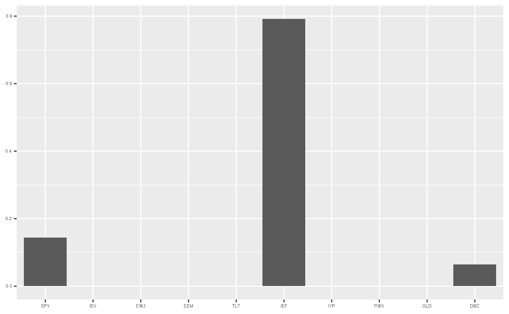
이처럼 변동성이 가장 낮은 종목에 대부분의 비중이 투자되는 구석해(Corner Solution) 문제를 해결하기 위해 각 자산의 최소 및 최대 투자비중 제약조건을 추가해 줄 필요가 있습니다.
11.1.5 최소 및 최대 투자비중 제약조건
구석해 문제를 방지하고, 모든 자산에 골고루 투자하기 위해 개별 투자비중을 최소 5%, 최대 20%로 하는 제약조건을 추가하겠습니다. 먼저 slsqp() 함수에서 제약조건을 추가하는 방법은 다음과 같습니다.
result = slsqp( x0 = rep(0.1, 10),
fn = objective,
hin = hin.objective,
heq = heq.objective,
lower = rep(0.05, 10),
upper = rep(0.20, 10))
w_4 = result$par %>% round(., 4) %>%
setNames(colnames(rets))
print(w_4)## SPY IEV EWJ EEM TLT IEF IYR RWX GLD DBC
## 0.05 0.05 0.05 0.05 0.20 0.20 0.05 0.05 0.20 0.10함수의 마지막에 lower와 upper 제약조건을 추가로 입력하면 해당 값 사이에서 최적화를 만족하는 해를 찾게 되며, 해당 예에서는 5%와 20% 사이에서 해를 찾게 됩니다. 추가로 입력한 제약조건에 맞게, 최소 투자비중은 5%이며, 최대 투자비중은 20%임을 확인할 수 있습니다.
다음은 solve.QP() 함수 내에서 제약조건을 추가하는 방법입니다. 해당 함수 역시 다른 입력값은 모두 동일하며, 제약조건의 우변에 해당하는 bvec 항목만 수정하면 됩니다. 최소, 최대 투자비중 제약조건을 기존 [0, 1]에서 [0.05, 0.20] 로 변경하면, bvec에 해당하는 행렬은 다음과 같이 변경됩니다.
\[ 기존: \begin{bmatrix} w_1 + w_2 + \dots + w_{10} \\ w_1 \\ \vdots \\ w_{10} \\ -w_1 \\ \vdots \\ -w_{10} \end{bmatrix} \ge \begin{bmatrix} 1 \\ 0 \\ \vdots \\ 0 \\ -1 \\ \vdots \\ -1 \end{bmatrix} \\ \] \[변경: \begin{bmatrix} w_1 + w_2 + \dots + w_{10} \\ w_1 \\ \vdots \\ w_{10} \\ -w_1 \\ \vdots \\ -w_{10} \end{bmatrix} \ge \begin{bmatrix} 1 \\ 0.05 \\ \vdots \\ 0.05 \\ -0.20 \\ \vdots \\ -0.20 \end{bmatrix} \]
Dmat = covmat
dvec = rep(0, 10)
Amat = t(rbind(rep(1, 10), diag(10), -diag(10)))
bvec = c(1, rep(0.05, 10), -rep(0.20, 10))
meq = 1
result = solve.QP(Dmat, dvec, Amat, bvec, meq)
w_5 = result$solution %>% round(., 4) %>%
setNames(colnames(rets))
print(w_5)## SPY IEV EWJ EEM TLT IEF IYR RWX GLD DBC
## 0.05 0.05 0.05 0.05 0.20 0.20 0.05 0.05 0.20 0.10bvec 항목을 제외한 모든 코드는 기존과 동일하며, 조건함수의 우변인 bvec만 각각 최소 투자비중과 최대 투자비중이 [0, 1]에서 [0.05, 0.20]으로 변경되었습니다. 해당 방법 역시 추가적인 투자비중 제약이 잘 적용되었음이 확인됩니다.
마지막으로 optimalPortfolio() 함수 내에서 최소 및 최대 투자비중을 추가하는 방법입니다. 입력변수의 control 항목 중 constraint 부분을 간단하게 수정해 원하는 조건을 입력할 수 있습니다.
w_6 = optimalPortfolio(covmat,
control = list(type = 'minvol',
constraint = 'user',
LB = rep(0.05, 10),
UB = rep(0.20, 10))) %>%
round(., 4) %>%
setNames(colnames(rets))
print(w_6)## SPY IEV EWJ EEM TLT IEF IYR RWX GLD DBC
## 0.05 0.05 0.05 0.05 0.20 0.20 0.05 0.05 0.20 0.10constraint 부분에 롱온리 제약조건에 해당하는 lo 대신 직접 제약값들을 입력할 수 있는 user를 입력하며, LB에는 최소 투자비중 벡터를, UB에는 최대 투자비중 벡터를 입력합니다. 따라서 원하는 제약조건 내에서 결괏값이 계산됩니다.
| SPY | IEV | EWJ | EEM | TLT | IEF | IYR | RWX | GLD | DBC | |
|---|---|---|---|---|---|---|---|---|---|---|
| slsqp | 0.05 | 0.05 | 0.05 | 0.05 | 0.2 | 0.2 | 0.05 | 0.05 | 0.2 | 0.1 |
| solve.QP | 0.05 | 0.05 | 0.05 | 0.05 | 0.2 | 0.2 | 0.05 | 0.05 | 0.2 | 0.1 |
| optimalPortfolio | 0.05 | 0.05 | 0.05 | 0.05 | 0.2 | 0.2 | 0.05 | 0.05 | 0.2 | 0.1 |
최소 및 최대 제약조건을 추가한 경우도 세 가지 방법 모두 동일한 결과가 나오게 되며, 비중도 각각 5%와 20%로 제한되어 구석해 문제 또한 해결되었음이 확인됩니다.
data.frame(w_4) %>%
ggplot(aes(x = factor(rownames(.), levels = rownames(.)),
y = w_4)) +
geom_col() +
geom_hline(aes(yintercept = 0.05), color = 'red') +
geom_hline(aes(yintercept = 0.20), color = 'red') +
xlab(NULL) + ylab(NULL)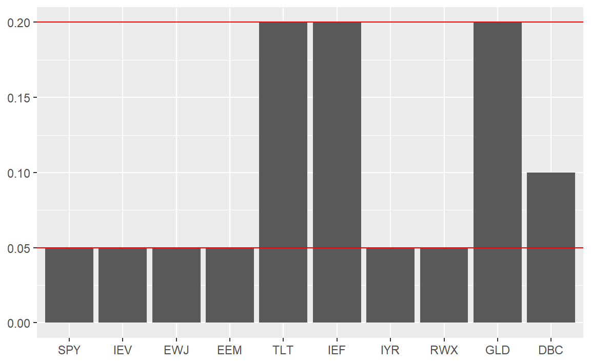
11.1.6 각 자산별 제약조건의 추가
투자 규모가 크지 않다면 위에서 추가한 제약조건만으로도 충분히 훌륭한 포트폴리오가 구성됩니다. 그러나 투자 규모가 커지면 추가적인 제약조건들을 고려해야 할 경우가 생깁니다. 벤치마크 비중과의 괴리로 인한 추적오차(Tracking Error)를 고려해야 할 수도 있고, 투자 대상별 거래량을 고려한 제약조건을 추가해야 할 때도 있습니다.
기존 제약조건에는 자산별로 동일한 최소 및 최대 투자비중 제약조건을 다루었지만, 자산별로 상이한 제약조건이 필요할 경우도 있습니다. slsqp()와 optimalPortfolio() 함수에서는 복잡한 제약조건을 다루기가 힘들지만, solve.QP() 함수는 bvec 부분을 간단하게 수정해 어렵지 않게 구현이 가능합니다.
먼저 표 11.8은 새롭게 설정하고자 하는 각 자산별 최소 및 최대 제약조건입니다.
| 제약 | 1 | 2 | 3 | 4 | 5 | 6 | 7 | 8 | 9 | 10 |
|---|---|---|---|---|---|---|---|---|---|---|
| 최소 | 0.10 | 0.10 | 0.05 | 0.05 | 0.10 | 0.10 | 0.05 | 0.05 | 0.03 | 0.03 |
| 최대 | 0.25 | 0.25 | 0.20 | 0.20 | 0.20 | 0.20 | 0.10 | 0.10 | 0.08 | 0.08 |
이를 행렬의 형태로 나타내면 다음과 같습니다.
\[ \begin{bmatrix} 1 & \dots & 1 \\ 1 & \dots & 0 \\ \vdots & \ddots & \vdots \\ 0 & \dots & 1 \\ -1 & \dots & 0 \\ \vdots & \ddots & \vdots \\ 0 & \dots & -1 \\ \end{bmatrix} \begin{bmatrix} w_1 \\ w_2 \\ \vdots \\ w_{10} \end{bmatrix} = \begin{bmatrix} w_1 + w_2 + \dots + w_{10} \\ w_1 \\ w_2 \\ w_3 \\ w_4 \\ w_5 \\ w_6 \\ w_7\\ w_8\\ w_9\\ w_{10} \\ -w_1 \\ -w_2 \\ -w_3 \\ -w_4 \\ -w_5 \\ -w_6 \\ -w_7 \\ -w_8 \\ -w_9 \\ -w_{10} \end{bmatrix} \ge \begin{bmatrix} 1 \\ 0.10 \\ 0.10 \\ 0.05 \\ 0.05 \\ 0.10 \\ 0.10 \\ 0.05 \\ 0.05 \\ 0.03 \\ 0.03 \\ -0.25 \\ -0.25 \\ -0.20 \\ -0.20 \\ -0.20 \\ -0.20 \\ -0.10 \\ -0.10 \\ -0.08 \\ -0.08 \end{bmatrix} \]
위의 행렬 중 오른쪽 부분을 bvec에 그대로 입력합니다.
Dmat = covmat
dvec = rep(0, 10)
Amat = t(rbind(rep(1, 10), diag(10), -diag(10)))
bvec = c(1, c(0.10, 0.10, 0.05, 0.05, 0.10,
0.10, 0.05, 0.05, 0.03, 0.03),
-c(0.25, 0.25, 0.20, 0.20, 0.20,
0.20, 0.10, 0.10, 0.08, 0.08))
meq = 1
result = solve.QP(Dmat, dvec, Amat, bvec, meq)
result$solution %>%
round(., 4) %>%
setNames(colnames(rets))## SPY IEV EWJ EEM TLT IEF IYR RWX
## 0.1034 0.1000 0.0866 0.0500 0.2000 0.2000 0.0500 0.0500
## GLD DBC
## 0.0800 0.0800결괏값을 확인해보면 각 자산별 제약조건 내에 위치함을 확인할 수 있습니다.
11.2 최대분산효과 포트폴리오
앞서 설명했듯이 포트폴리오의 변동성은 \(\sum_{i=1}^{n}\sum_{j=1}^{n}w_iw_j\sigma_{ij}\) 형태로 나타나며, 이는 다음과 같이 표현할 수도 있습니다.
\[\sigma_p^2 = \sum_{i=1}^{n}\sum_{j=1}^{n}w_iw_j\sigma_{ij} = \sum_{i=1}^nw_i^2\sigma_i^2 + \sum_{i=1}^{n}\sum_{i \ne j}^{n}w_iw_j\rho_{ij}\sigma_i\sigma_j \]
이 중 \(\sum_{i=1}^{n}\sum_{i \ne j}^{n}w_iw_j\rho_{ij}\sigma_i\sigma_j\) 부분에는 자산 간 상관관계\((\rho_{ij})\)가 포함되어 있습니다. 상관관계는 -1과 1 사이에 위치하며 상관관계가 1, 즉 두 자산이 완벽하게 동일한 경우에는 포트폴리오의 변동성은 개별 자산 변동성의 가중합과 같습니다. 그러나 상관관계가 낮아질수록 포트폴리오의 변동성 또한 점차 낮아집니다. 이러한 효과를 투자에서는 분산효과라고 합니다.
이러한 분산효과의 정도를 측정하는 지표가 분산 비율(DR: Diversification Ratio)입니다. 분산 비율의 분자는 개별 변동성의 가중합이며, 분모는 포트폴리오의 변동성입니다. 이를 수식으로 나타내면 다음과 같습니다.
\[ 분산\,비율 = \frac{\sum w_i \sigma_i}{\sigma_p} = \frac{w'\sigma}{\sqrt{w'\Omega w}}\]
모든 자산 간의 상관관계가 1일 경우, 위의 예시에서 살펴본 것과 같이 포트폴리오의 변동성은 개별 자산 변동성의 가중합과 같아지게 됩니다. 즉, \(\sum w_i \sigma_i = \sigma_p\)가 되어, 분산 비율은 1이 됩니다. 그러나 대부분의 경우에서 자산 간의 상관관계는 1보다 낮으며, 이로 인해 포트폴리오의 분산은 단순 가중합보다 작아지게 되고(\(\sigma_p < \sum w_i\sigma_i\)), 분산 비율은 1보다 커지게 됩니다.
자산 간 상관관계가 낮은 종목을 위주로 포트폴리오를 구성할수록 분산효과로 인해 포트폴리오의 변동성은 낮아지고, 분산 비율은 점점 커집니다. 최대분산효과 포트폴리오(Most Diversified Portfolio)는 분산효과가 최대가 되는, 즉 분산 비율이 최대가 되는 포트폴리오를 구성하는 방법입니다. 이에 대한 목적함수와 제약조건은 다음과 같습니다.
\[목적함수: max\,DR = max \frac{\sum w_i \sigma_i}{\sigma_p}\] \[제약조건: \sum_{i=1}^n w_i = 1, w_i \ge 0\]
최대분산효과 포트폴리오의 목적함수는 분산비율을 최대화하는 데 있는 반면, 대부분의 최적화 프로그래밍은 목적함수를 최소화하는 형태로 이루어집니다. 따라서 목적함수인 \(maxDR\)을 최소화하는 형태로 바꿀 필요가 있는데 크게 세 가지 방법이 있습니다.
- Choueifaty Synthetic Asset Back-Transformation을 이용하는 방법(Choueifaty and Coignard 2008)
- Duality를 이용하는 방법(Choueifaty, Froidure, and Reynier 2013)
- Min (-)DR 방법
먼저 Choueifaty Synthetic Asset Back-Transformation 방법은 목적함수 \(min\,w_s'cw_s\)와 제약조건 \(\sum_{i=1}^n w_i = 1, w_i \ge 0\)을 만족하는 자산별 비중을 구합니다. 그 후, 구해진 비중을 각각의 표준편차로 나누어주며, 비중의 합이 1이 되도록 표준화해줍니다. 여기서 주의할 점은 목적함수의 \(c\)가 우리가 지금까지 사용하던 분산-공분산 행렬이 아닌, 상관관계 행렬이라는 점입니다.
Duality 방법의 목적함수는 최소분산 포트폴리오와 동일한 \(min^1/_2w'\sigma w\)이며, 제약조건만 \(\sum_{i=1}^n w_i \sigma_i = 1, w_i \ge 0\), 즉 개별 자산의 비중이 0보다 크고 개별 표준편차의 가중합이 1인 조건으로 바뀝니다. 그 후, 비중의 합이 1이 되도록 표준화를 해줍니다.
기존 두 방법이 수학적 증명에 의해 \(maxDR\)을 최소화하는 형태로 풀어준 반면, 간단하게 목적함수를 \(min(-DR)\)의 형태로 바꾸어 풀 수도 있습니다. 표 11.3는 세 가지 방법을 요약한 내용입니다.
| 방법 | 목적함수 | 제약조건 | 표준화 |
|---|---|---|---|
| Transformation | \(min\,w_s'cw_s\) | \(\sum_{i=1}^n w_i = 1\) \(w_i \ge 0\) | 비중을 각각의 표준편차로 나눈 후 비중의 합으로 표준화 |
| Duality | \(min\,^1/_2w'\sigma w\) | \(\sum_{i=1}^n w_i \sigma_i = 1\) \(w_i \ge 0\) | 비중의 합으로 표준화 |
| -DR | min(-DR) | \(\sum_{i=1}^n w_i = 1\) \(w_i \ge0\) | 불필요 |
11.2.1 solve.QP() 함수를 이용한 최적화
먼저 solve.QP() 함수를 이용해 Duality 방법을 통해 최대분산효과 포트폴리오를 만족하는 해를 찾도록 하겠습니다.
Duality 방법에서 목적함수는 \(min\,^1/_2w'\sigma w\)로 최소분산 포트폴리오와 동일하며, 제약조건은 \(\sum_{i=1}^n w_i \sigma_i = 1, w_i \ge 0\)입니다. 제약조건 부분인 Amat과 bvec 부분을 입력할 때 이 부분을 고려해야 합니다.
Dmat = covmat
dvec = rep(0, 10)
Amat = t(rbind(sqrt(diag(covmat)), diag(10)))
bvec = c(1, rep(0, 10))
meq = 1제약조건에 해당하는 Amat 부분과 bvec 부분은 최소분산 포트폴리오와 다소 다릅니다. 표 11.10에는 둘 간에 코드가 어떻게 다른지 나타나 있습니다.
| 인자 | 최소분산 포트폴리오 | 최대분산효과 포트폴리오 |
|---|---|---|
| Amat | t(rbind(rep(1, 10), diag(10), -diag(10))) | t(rbind(sqrt(diag(covmat)), diag(10))) |
| bvec | c(1, rep(0, 10), -rep(1, 10)) | c(1, rep(0, 10)) |
이해를 위해 Duality 방법의 제약조건을 행렬의 형태로 표현하면 다음과 같습니다.
\[ \begin{bmatrix} \sigma_1 & \dots & \sigma_{10} \\ 1 & \dots & 0 \\ \vdots & \ddots & \vdots \\ 0 & \dots & 1 \end{bmatrix} \begin{bmatrix} w_1 \\ w_2 \\ \vdots \\ w_{10} \end{bmatrix} = \begin{bmatrix} \sigma_1w_1 + \sigma_2w_2 + \dots + \sigma_{10}w_{10} \\ w_1 \\ \vdots \\ w_{10} \\ \end{bmatrix} \ge \begin{bmatrix} 1 \\ 0 \\ \vdots \\ 0 \end{bmatrix} \]
1행의 \(\sigma_1w_1 + \sigma_2w_2 + \dots + \sigma_{10}w_{10}\)은 \(\sum_{i=1}^n w_i \sigma_i = 1\)과 같으며, 해당 식은 등위제약조건으로서 \(\sum_{i=1}^n w_i \sigma_i = \sigma_1w_1 + \sigma_2w_2 + \dots + \sigma_{10}w_{10} = 1\)을 의미합니다. 2행부터 마지막 행까지는 모두 \(w_i \ge 0\) 조건으로써, 개별 자산의 투자비중이 0보다 큰 조건을 의미합니다.
행렬의 맨 왼쪽에 해당하는 Amat은 각 자산의 표준편차로 이루어진 벡터 행렬과, 1로 이루어진 대각행렬로 구성되어 있습니다. 먼저 diag(covmat)을 통해 분산-공분산 부분에서 대각 부분, 즉 분산 부분만을 추출할 수 있습니다. 개별 자산의 분산인 \(\sigma_{i,i}\)는 \(\sigma_i\sigma_i\rho_{1,1}\) 형태로 쓸 수 있으며, \(\rho_{1,1} = 1\)을 적용하면 \(\sigma_i^2\)와 같습니다. 따라서 대각부분 값에 제곱근을 계산하는 sqrt() 함수를 적용하면 각각의 표준편차만 남게 됩니다. 이를 diag(10)을 통해 만든 대각행렬과 행으로 묶어준 후 전치행렬을 입력해 줍니다.
bvec는 행렬의 맨 오른쪽과 같이 등위 제약조건에 해당하는 1과 부등위 제약조건에 해당하는 0들로 구성되어 있습니다. 차후에 표준화 과정을 거쳐야 하므로 Duality 방법에서는 개별 자산의 투자비중이 1보다 작은 조건을 입력하지 않아도 됩니다.
result = solve.QP(Dmat, dvec, Amat, bvec, meq)
w = result$solution %>%
round(., 4) %>%
setNames(colnames(rets))
print(w)## SPY IEV EWJ EEM TLT IEF IYR RWX
## 17.001 1.199 4.617 0.000 26.176 37.925 2.864 0.000
## GLD DBC
## 7.859 11.959입력된 목적함수와 제약조건들을 바탕으로 solve.QP() 함수를 통해 최적화를 수행한 후 최대분산효과를 만족하는 해를 구해보면, 비중의 합이 1을 초과하게 됩니다. \(w_i = \frac{w_i}{\sum_{i=1}^nw_i}\)를 통해 비중의 합이 1이 되도록 표준화를 해줍니다.
## SPY IEV EWJ EEM TLT IEF IYR RWX
## 0.1551 0.0109 0.0421 0.0000 0.2388 0.3460 0.0261 0.0000
## GLD DBC
## 0.0717 0.1091표준화 과정을 통해 비중의 합이 1이 되었습니다.
data.frame(w) %>%
ggplot(aes(x = factor(rownames(.), levels = rownames(.)),
y = w)) +
geom_col() +
geom_col() +
xlab(NULL) + ylab(NULL)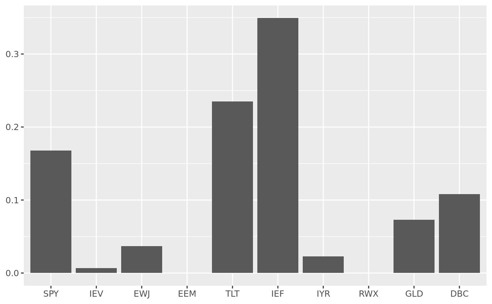
11.2.2 optimalPortfolio() 함수를 이용한 최적화
최소분산 포트폴리오와 동일하게 optimalPortfolio() 함수를 이용해 매우 간단하게 최대분산효과 포트폴리오를 구현할 수 있습니다.
w = optimalPortfolio(covmat,
control = list(type = 'maxdiv',
constraint = 'lo')) %>%
round(., 4)
print(w)## [1] 0.1551 0.0109 0.0421 0.0000 0.2388 0.3460 0.0261
## [8] 0.0000 0.0717 0.1091control 항목의 type에 maximum diversification을 의미하는 ’maxdiv’를 입력해주며, 제약조건에는 투자비중이 0보다 큰 lo(Long Only) 조건을 입력합니다. 패키지를 활용해 매우 간단하게 최대분산효과 포트폴리오를 구현할 수 있으며, 그 결과 또한 앞에서 계산한 것과 동일합니다. 해당 함수의 코드를 확인해보면, 최대분산효과 포트폴리오 계산 시 Min -DR 방법을 사용합니다.
11.2.3 최소 및 최대 투자비중 제약조건
최대분산효과 포트폴리오 역시 구석해 문제가 발생하며, 모든 자산에 골고루 투자하기 위해 개별 투자비중을 최소 5%, 최대 20%로 하는 제약조건을 추가하겠습니다.
Duality 방법에서는 목적함수인 \(min\,^1/_2w'\sigma w\)과 제약조건인 \(\sum_{i=1}^n w_i \sigma_i = 1, w_i \ge 0\)에 맞게 해를 구한 후 비중의 합이 1이 되도록 표준화하는 과정을 거쳤습니다. 따라서 비중의 최소 및 최대 제약조건은 단순히 \(lb \le w_i \le ub\)가 아닌 표준화 과정인 \(w_i = \frac{w_i}{\sum_{i=1}^nw_i}\)까지 고려해 적용해야 합니다. 표 11.11는 이를 수식으로 나타낸 것입니다.
| 최소비중 제약조건 | 최대비중 제약조건 |
|---|---|
| \(\frac{w_i}{\sum_{i=1}^nw_i} \ge lb\) | \(\frac{w_i}{\sum_{i=1}^nw_i} \le ub\) |
| \(\Rightarrow -lb + \frac{w_i}{\sum_{i=1}^nw_i} \ge 0\) | \(\Rightarrow ub - \frac{w_i}{\sum_{i=1}^nw_i} \ge 0\) |
| \(\Rightarrow -lb + \frac{w_i}{e^Tw} \ge 0\) | \(\Rightarrow ub - \frac{w_i}{e^Tw} \ge 0\) |
| \(\Rightarrow -lb \times e^Tw + w \ge 0\) | \(\Rightarrow ub \times e^Tw - w \ge 0\) |
| \(\Rightarrow (-lb \times e^T + I)w \ge 0\) | \(\Rightarrow (ub \times e^T - I)w \ge 0\) |
최소 비중 제약조건인 \(-lb \times e^T + I\)의 예를 행렬로 풀어보도록 하겠습니다. \(-lb \times e^T\)의 경우 행렬로 표현하면 다음과 같으며, \(-lb\)로 이루어진 \(n \times n\) 행렬입니다.
\[ \begin{bmatrix} -lb \\ \vdots \\ -lb \end{bmatrix} \begin{bmatrix} 1 \\ \vdots \\ 1 \end{bmatrix}^T = \begin{bmatrix} -lb \\ \vdots \\ -lb \end{bmatrix} \begin{bmatrix} 1 & \dots & 1 \end{bmatrix} = \begin{bmatrix} -lb & \dots & -lb \\ \vdots & \ddots & \vdots \\ -lb & \dots & -lb \end{bmatrix}\]
\(I\)는 대각선 부분이 1, 나머지가 0인 항등행렬을 의미합니다. 따라서 \((-lb \times e^T + I)\)를 계산하면 다음과 같습니다.
\[\begin{bmatrix} -lb + 1 & \dots & -lb \\ \vdots & \ddots & \vdots \\ -lb & \dots & -lb + 1 \end{bmatrix}\]
최소분산 포트폴리오와는 다르게 Duality 방법으로 최대분산효과 포트폴리오를 구현하면 최소 및 최대 제약조건이 우변이 아닌 좌변에 들어가게 되며, 해당 제약조건을 고려해 행렬로 표현하면 다음과 같습니다.
\[ \begin{bmatrix} \sigma_1 & \dots & \sigma_{10} \\ -lb + 1 & \dots & -lb \\ \vdots & \ddots & \vdots \\ -lb & \dots & -lb + 1 \\ ub-1 & \dots & ub \\ \vdots & \ddots & \vdots \\ ub & \dots & ub-1 \end{bmatrix} \begin{bmatrix} w_1 \\ w_2 \\ \vdots \\ w_{10} \end{bmatrix} = \begin{bmatrix} \sigma_1w_1 + \sigma_2w_2 + \dots + \sigma_{10}w_{10} \\ -lb(w_1 + w_2 + \dots + w_{10}) + w_1 \\ \vdots \\ -lb(w_1 + w_2 + \dots + w_{10}) + w_{10} \\ wb(w_1 + w_2 + \dots + w_{10}) - w_1 \\ \vdots \\ ub(w_1 + w_2 + \dots + w_{10}) - w_{10} \end{bmatrix} \ge \begin{bmatrix} 1 \\ 0 \\ \vdots \\ 0 \\ 0 \\ \vdots \\ 0 \end{bmatrix} \]
첫 번째 행 \(\sigma_1w_1 + \sigma_2w_2 + \dots + \sigma_{10}w_{10}\)은 등위 제약조건인 \(\sum_{i=1}^n w_i \sigma_i = 1\)에 해당하며, 두 번째 행부터는 부등위 제약조건에 해당합니다. 두 번째 행을 정리하면 \(\frac{w_1}{w_1+w_2+\dots+w_{10}} \ge lb\), 즉 비중의 표준화가 고려된 최소비중 제약조건입니다. 마지막 행 역시 정리하면 \(\frac{w_1}{w_1+w_2+\dots+w_{10}} \le ub\)가 되어 비중의 표준화가 고려된 최대비중 제약조건을 의미합니다. 위 행렬을 고려해 Amat과 bvec을 수정한 코드는 다음과 같습니다.
Dmat = covmat
dvec = rep(0, 10)
Alb = -rep(0.05, 10) %*% matrix(1, 1, 10) + diag(10)
Aub = rep(0.20, 10) %*% matrix(1, 1, 10) - diag(10)
Amat = t(rbind(sqrt(diag(covmat)), Alb, Aub))
bvec = c(1, rep(0, 10), rep(0, 10))
meq = 1
result = solve.QP(Dmat, dvec, Amat, bvec, meq)
w = result$solution
w = (w / sum(w)) %>%
round(., 4) %>%
setNames(colnames(rets))
print(w)## SPY IEV EWJ EEM TLT IEF IYR RWX
## 0.0500 0.0500 0.0500 0.0500 0.2000 0.2000 0.0500 0.0500
## GLD DBC
## 0.1895 0.1105Alb의 -rep(0.05, 10)는 \(-lb\) 부분, matrix(1, 1, 10)은 \(e^T\) 부분, diag(10)부분은 \(I\) 부분을 의미하며, 이는 최소비중 제약조건의 좌변(\(-lb \times e^T + I\))과 같습니다. 동일하게 Aub는 최대비중 제약조건의 좌변(\(ub \times e^T - I\))과 같으며, 결과를 확인하면 최소 및 최대비중 제약조건인 [5%, 20%]가 제대로 반영되었습니다.
data.frame(w) %>%
ggplot(aes(x = factor(rownames(.), levels = rownames(.)),
y = w)) +
geom_col() +
geom_hline(aes(yintercept = 0.05), color = 'red') +
geom_hline(aes(yintercept = 0.20), color = 'red') +
xlab(NULL) + ylab(NULL)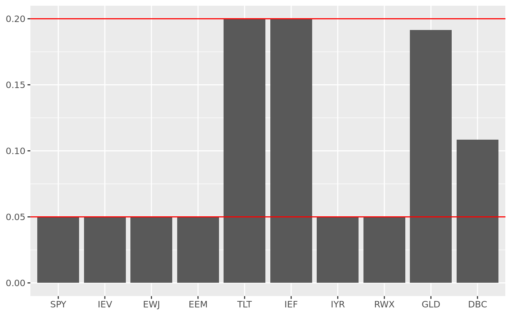
11.2.4 각 자산 별 제약조건의 추가
최소분산 포트폴리오와 동일하게 자산별로 다른 제약조건을 추가해 포트폴리오를 구성하겠습니다. 표 11.12는 각 자산별 최소 및 최대 투자비중 값이며, 변경된 제약조건을 행렬의 형태로 나타내었습니다. 주의해야 할 점은 최소비중과 최대비중의 제약조건 추가 시 \(\frac{w_1}{w_1+w_2+\dots+w_{10}} \ge lb\) 형태로 고려해야 한다는 점입니다.
| 제약 | 1 | 2 | 3 | 4 | 5 | 6 | 7 | 8 | 9 | 10 |
|---|---|---|---|---|---|---|---|---|---|---|
| 최소 | 0.10 | 0.10 | 0.05 | 0.05 | 0.10 | 0.10 | 0.05 | 0.05 | 0.03 | 0.03 |
| 최대 | 0.25 | 0.25 | 0.20 | 0.20 | 0.20 | 0.20 | 0.10 | 0.10 | 0.08 | 0.08 |
\[ \scriptsize \begin{bmatrix} \sigma_1 & \sigma_2 & \dots & \sigma_{10} \\ -lb_1 + 1 & -lb_1 & \dots & -lb_1 \\ -lb_2 & -lb_2 + 1 & \dots & -lb_2 \\ \vdots & \ddots & \dots & \vdots \\ -lb_{10} & -lb_{10} & \dots & -lb_{10} + 1 \\ ub_1 - 1 & ub_1 & \dots & ub_1 \\ ub_2 & ub_2 - 1 & \dots & ub_2 \\ \vdots & \ddots & \dots & \vdots \\ ub_{10} & ub_{10} & \dots & ub_{10} - 1 \end{bmatrix} \begin{bmatrix} w_1 \\ w_2 \\ \vdots \\ w_{10} \end{bmatrix} = \begin{bmatrix} \sigma_1w_1 + \sigma_2w_2 + \dots + \sigma_{10}w_{10} \\ -lb_1(w_1 + w_2 + \dots + w_{10}) + w_1 \\ -lb_2(w_1 + w_2 + \dots + w_{10}) + w_2\\ \vdots \\ -lb_{10}(w_1 + w_2 + \dots + w_{10}) + w_{10} \\ wb_1(w_1 + w_2 + \dots + w_{10}) - w_1 \\ wb_2(w_1 + w_2 + \dots + w_{10}) - w_2 \\ \vdots \\ ub_{10}(w_1 + w_2 + \dots + w_{10}) - w_{10} \end{bmatrix} \ge \begin{bmatrix} 1 \\ 0 \\ \vdots \\ 0 \\ 0 \\ \vdots \\ 0 \end{bmatrix} \]
기존에 공통적으로 적용되던 최소 및 최대 투자비중이 자산별로 다르게 구성되었습니다. 따라서 \(-lb \times e^T + I\)와 \(ub \times e^T - I\)만 \(-lb_i \times e^T + I\) \(ub_i \times e^T - I\)로 수정하면 해당 제약조건 역시 손쉽게 구현이 가능합니다.
Dmat = covmat
dvec = rep(0, 10)
Alb = -c(0.10, 0.10, 0.05, 0.05, 0.10,
0.10, 0.05, 0.05, 0.03, 0.03) %*%
matrix(1, 1, 10) + diag(10)
Aub = c(0.25, 0.25, 0.20, 0.20, 0.20,
0.20, 0.10, 0.10, 0.08, 0.08) %*%
matrix(1, 1, 10) - diag(10)
Amat = t(rbind(sqrt(diag(covmat)), Alb, Aub))
bvec = c(1, rep(0, 10), rep(0, 10))
meq = 1
result = solve.QP(Dmat, dvec, Amat, bvec, meq)
w = result$solution
w = (w / sum(w)) %>%
round(., 4) %>%
setNames(colnames(rets))
print(w)## SPY IEV EWJ EEM TLT IEF IYR RWX GLD DBC
## 0.10 0.10 0.09 0.05 0.20 0.20 0.05 0.05 0.08 0.08최소 및 최대투자비중 제약조건을 나타내는 Alb와 Aub 부분이 자산별 각각의 제약비중으로 변경되었으며, 나머지 부분은 모두 동일합니다. 결괏값들이 모두 제약조건 내에 위치함을 확인할 수 있습니다.
11.3 위험균형 포트폴리오
포트폴리오를 구성하는 자산들과 전체 위험의 관계를 이해하기 위해서는, 먼저 한계 위험기여도(MRC: Marginal Risk Contribution)와 위험기여도(RC: Risk Contribution)에 대해 알아야 합니다. 한계 위험기여도는 특정 자산의 비중을 한 단위 증가시켰을 때 전체 포트폴리오의 위험의 증가를 나타내는 단위로서, 수학의 편미분과 같은 개념입니다. \(i\)번째 자산의 한계 위험기여도는 아래와 같이 나타낼 수 있습니다.
\[MRC_i = \frac{\partial\sigma_p}{\partial w_i} \]
\(\sqrt {f'(x)} = \frac{f'(x)}{2\sqrt{f(x)}}\)인 사실을 이용하면, 한계 위험기여도는 다음과 같이 풀 수 있습 니다. 결과적으로 분자는 분산-공분산 행렬과 각 자산의 비중의 곱, 분모는 포트폴리오의 표준편차 형태로 나타납니다.
\[\begin{equation*} \begin{split} \frac{\partial\sigma_p}{\partial w} & = \frac{\partial(\sqrt{w'\Omega w})}{\partial w} \\ & =\frac{\partial(w'\Omega w)}{\partial w} \times \frac{1}{2\sqrt{w'\Omega w}} \\ & =\frac{2\Omega w}{2\sqrt{w'\Omega w}} \\ & =\frac{\Omega w}{\sqrt{w'\Omega w}} \end{split} \end{equation*}\]
위험기여도는 특정 자산이 포트폴리오 내에서 차지하는 위험의 비중입니다. 한계 위험기여도가 큰 자산도 포트폴리오 내에서 비중이 작다면, 포트폴리오 내에서 차지하는 위험의 비중은 작을 것입니다. 반면에, 한계 위험기여도가 작은 자산일지라도 비중이 압도적으로 많다면, 포트폴리오 내에서 차지하는 위험의 비중은 클 것입니다.
결과적으로 \(i\)번째 자산의 위험기여도는, \(i\)번째 자산의 한계 위험기여도와 포트폴리오 내 비중의 곱으로 이루어집니다.
\[RC_i = \frac{\partial\sigma_p}{\partial w_i} \times w_i\] 위험기여도를 코드로 나타내면 다음과 같습니다. 먼저 포트폴리오 비중인 \(w\)와 분산-공분산 행렬인 covmat을 이용해 한계 위험기여도를 계산합니다. 그 후 비중 \(w\)를 곱해 위험기여도를 계산해 준 후 합계가 1이 되도록 표준화를 해줍니다.
get_RC = function(w, covmat) {
port_vol = t(w) %*% covmat %*% w
port_std = sqrt(port_vol)
MRC = (covmat %*% w) / as.numeric(port_std)
RC = MRC * w
RC = c(RC / sum(RC))
return(RC)
}11.3.1 주식 60%와 채권 40% 포트폴리오의 위험기여도
자산배분에서 가장 많이 사용되는 투자방법은 주식에 60%, 채권에 40% 가량의 비율로 투자하는 것입니다. 주식과 채권이 서로 상관관계가 낮아 분산효과가 있다는 점, 장기적으로 주식이 채권에 비해 장기적으로 수익률이 높다는 점을 감안하면 이는 꽤나 합리적인 방법으로 보입니다.
그러나 눈에 보이는 비중이 60대 40이라도, 포트폴리오 내에서 각 자산이 가지고 있는 위험기여도 60대 40의 비중이 아닌 전혀 다른 비중을 가지고 있습니다.
ret_stock_bond = rets[, c(1, 5)]
cov_stock_bond = cov(ret_stock_bond)
RC_stock_bond = get_RC(c(0.6, 0.4), cov_stock_bond)
RC_stock_bond = round(RC_stock_bond, 4)
print(RC_stock_bond)## [1] 0.9764 0.0236rets 데이터에서 첫 번째 행은 미국 주식 수익률을, 다섯 번째 행은 미국 장기채를 의미하므로, 해당 부분을 ret_stock_bond 변수에 지정합니다. 그 후 cov() 함수를 이용해 두 자산의 분산-공분산 행렬을 만들어주며, 위에서 만든 get_RC 함수를 통해 자산별 위험기여도를 계산합니다.
주식과 채권이 가지는 위험기여도는 각각 97.64%, 2.36%로서 투자 비중인 60%, 40%와는 전혀 다른 위험 비중을 보입니다. 즉, 주식이 포트폴리오 위험의 대부분을 차지하고 있습니다.
11.3.2 rp() 함수를 이용한 최적화
앞의 예제와 같이 특정 자산이 포트폴리오의 위험을 대부분 차지하는 문제를 막고, 모든 자산이 동일한 위험기여도를 가지는 포트폴리오가 위험균형 포트폴리오(Risk Parity Portfolio)(Qian 2011) 혹은 동일 위험기여도 포트폴리오(Equal Risk Contribution Portfolio)입니다. 이를 수식으로 쓰면 다음과 같습니다.
\[RC_1 = RC_2 = \dots = RC_n\] \[\frac{\partial\sigma_p}{\partial w_1} \times w_1 = \frac{\partial\sigma_p}{\partial w_2} \times w_2 = \dots = \frac{\partial\sigma_p}{\partial w_n} \times w_n = \frac{1}{n}\]
위험균형 포트폴리오 역시 slsqp()나 optimalPortfolio() 함수를 이용해 구현할 수 있으나, 간혹 최적화된 값을 찾지 못할 때도 있습니다. 반면 cccp 패키지의 rp() 함수를 사용하면 매우 정확하게 위험균형 포트폴리오를 구성하는 비중을 계산할 수 있습니다.
## SPY IEV EWJ EEM TLT IEF IYR RWX
## 0.0600 0.0464 0.0565 0.0371 0.1748 0.3721 0.0394 0.0505
## GLD DBC
## 0.0868 0.0763- x0은 최적화를 위한 초기 입력값이며 동일 비중인 10%씩을 입력합니다.
- P는 분산-공분산 행렬을 입력해줍니다.
- mrc는 목표로 하는 각 자산별 위험기여도 값18이며, 위험균형 포트폴리오의 경우 모든 자산의 위험기여도가 동일해야 하므로 10%씩을 입력합니다.
rp() 함수는 위 입력 변수를 바탕으로 최적해를 찾아줍니다. getx() 함수를 통해 해를 추출할 수 있으며, drop()을 통해 벡터 형태로 변환합니다. 마지막으로 비중의 합이 1이 되기 위해 비중들의 합으로 나눠줍니다.
최종적으로 계산된 비중이 위험균형 포트폴리오를 만족하는 해가 됩니다.
## [1] 0.10004 0.09991 0.10003 0.10008 0.10004 0.10007
## [7] 0.09991 0.10001 0.09998 0.09994get_RC() 함수를 통해 위험기여도를 확인해보면, 모든 자산이 거의 동일한 위험기여도를 가지는 것을 알 수 있습니다.
11.3.3 위험예산 포트폴리오
모든 자산의 위험기여도가 동일한 값이 아닌, 자산별로 다른 위험기여도를 가지는 포트폴리오를 구성해야 할 경우도 있습니다. 이러한 포트폴리오를 위험예산 포트폴리오(Risk Budget Portfolio)라고 합니다. 위험균형 포트폴리오 역시 각 자산의 위험예산이 \(\frac{1}{n}\)로 동일한 특수 형태이며, rp() 함수를 이용하면 위험예산 포트폴리오 역시 손쉽게 구현할 수 있습니다.
먼저 각 자산 별 위험예산을 표 11.13과 같이 정합니다. 1~4번 자산은 각각 15%씩, 5~6번 자산은 각각 10%씩, 7~10번 자산은 각각 5%씩 위험예산을 부여하고자 합니다.
| 자산 | 1 | 2 | 3 | 4 | 5 | 6 | 7 | 8 | 9 | 10 |
|---|---|---|---|---|---|---|---|---|---|---|
| 예산 | 0.15 | 0.15 | 0.15 | 0.15 | 0.1 | 0.1 | 0.05 | 0.05 | 0.05 | 0.05 |
library(cccp)
opt = rp(x0 = rep(0.1, 10),
P = covmat,
mrc = c(0.15, 0.15, 0.15, 0.15, 0.10,
0.10, 0.05, 0.05, 0.05, 0.05))## SPY IEV EWJ EEM TLT IEF IYR RWX
## 0.0843 0.0663 0.0781 0.0529 0.1823 0.3934 0.0197 0.0250
## GLD DBC
## 0.0543 0.0437mrc에 목표로 하는 각 자산별 위험기여도를 입력하며, 나머지는 기존 위험균형 포트폴리오와 동일하게 입력합니다.
## [1] 0.15006 0.15000 0.15007 0.15003 0.09989 0.09991
## [7] 0.05009 0.04995 0.05003 0.04997get_RC() 함수를 통해 위험기여도를 확인해보면 우리가 원하던 자산별 위험예산과 거의 동일한 것을 알 수 있습니다.
11.4 인덱스 포트폴리오 구성하기
이번에는 실제로 운용사에서 많이 사용되는 인덱스 포트폴리오 및 인핸스드 인덱스 포트폴리오 구성법에 대해 살펴보겠습니다.
투자는 크게 액티브 전략과 패시브 전략으로 나뉩니다. 액티브 전략이 벤치마크 대비 초과수익을 거두기 위해 적극적으로 투자를 하는 반면, 패시브 전략은 벤치마크를 그대로 추종하는 것을 목표로 합니다. 예를 들어 벤치마크가 2% 상승하였을 경우 액티브 전략은 이를 넘어서는 수익률을 얻고자 하지만, 패시브 전략은 정확히 2%의 수익률을 얻고자 합니다. 이러한 패시브 전략을 사용하는 펀드가 패시브 펀드 혹은 인덱스 펀드입니다.
흔히 벤치마크가 되는 지수(Index) 중 가장 많이 사용되는 것은 각 국가의 주가지수이며, 우리나라의 경우 KOSPI200 지수가 그 예입니다. 이 외에도 여러 국가를 대표하는 주가지수는 표 11.14 와 같습니다.
| 국가 | 지수명 |
|---|---|
| 미국 | S&P 500 |
| 영국 | FTSE 100 |
| 일본 | Nikkei 225 |
| 중국 | CSI 300 |
| 한국 | KOSPI 200 |
11.4.1 시가총액비중 계산하기
주가지수는 대부분 각 주식의 시가총액비중을 이용해 구성되며, 간단한 예제는 표 11.15와 같습니다.
| 종목 | 주가 | 상장 주식수 | 유동비 | 시가총액 | 지수 내 비중 |
|---|---|---|---|---|---|
| A | 40,000 | 4,000,000 | 70% | 112,000,000,000 | 44.80% |
| B | 50,000 | 3,000,000 | 60% | 90,000,000,000 | 36.00% |
| C | 30,000 | 2,000,000 | 80% | 48,000,000,000 | 19.20% |
| 합계 | 250,000,000,000 | 100.00% |
일반적으로 시가총액은 [주가 X 상장 주식수]로 계산됩니다. 그러나 자사주 등의 이유로 기업의 상장된 모든 주식이 거래가 되는 것은 아니며, 상장된 주식 중 유동적으로 거래되는 비율을 유동비라고 합니다. 따라서 지수를 구성할 때는 시가총액을 [주가 X 상장 주식수 X 유동비]로 계산합니다. 이렇게 계산된 각 기업의 시가총액을 전체 시가총액의 합으로 나누어 지수 내 비중을 계산합니다.
11.4.2 인덱스 포트폴리오 복제하기
이번에는 앞서 구한 데이터를 바탕으로 KOSPI 200 지수를 복제하는 예제를 살펴보겠습니다. 해당 지수의 산출 방법은 다음과 같습니다.
한국거래소 유가증권시장(Stock Market)의 보통주 전 종목 가운데 시장 대표성, 유동성(거래량), 업종 대표성(업종은 9개 업종으로 구분)을 기준으로 한다. 즉 시가총액이 상위군에 속하고 거래량이 많은 종목 서열에 따른 200 종목이 편입된다.
즉 일정 규칙에 따라 200 종목이 선정되고, 각 종목들의 시가총액비중 만큼을 지수 내 비중으로 가지고 갑니다. 물론 선정된 200 종목이 단순하게 시가총액의 순서대로 선택되는 것은 아니며, 유동비의 경우 지수제공업체인 한국거래소에서 유료로 제공하므로 이를 구매하지 않는 이상 정확하게 알 수 없습니다. 그러나 지수 내 종목 및 대략의 시가총액비중은 해당 지수를 추종하는 ETF(예: KODEX 200)의 PDF를 통해 확인할 수 있으며, 본 책에서는 편의를 위해 시가총액상위 200 종목을 선택하고 유동비는 모두 100%로 가정하겠습니다.
앞서 구한 데이터를 이용해 상위 200 종목의 시가총액비중을 계산해보도록 하겠습니다.
library(stringr)
library(dplyr)
KOR_ticker = read.csv('data/KOR_ticker.csv',
row.names = 1, stringsAsFactors = FALSE)
KOSPI200 = KOR_ticker %>% filter(시장구분 == '코스피') %>%
slice(1:200) %>%
rename(`시가총액` = `시가총액.원.`) %>%
mutate(시가총액비중 = 시가총액 / sum(시가총액))- 저장해둔 티커 정보를 불러옵니다.
filter()함수를 통해 코스피 시장에 해당하는 종목만을 선택합니다.slice()함수를 통해 1번부터 200번 행 까지 데이터를 선택합니다.rename()함수를 통해 열 이름을 바꿔 줍니다.- 각 주식의 시가총액을 전체 시가총액으로 나눈 후, 시가총액비중에 저장합니다.
계산된 시가총액비중을 시각화하도록 하겠습니다.
library(ggplot2)
KOSPI200 %>%
ggplot(aes(x = reorder(종목명, -시가총액비중), y = 시가총액비중)) +
geom_point() +
xlab('종목명') +
ylab('시가총액비중(%)') +
scale_y_continuous(labels = scales::percent)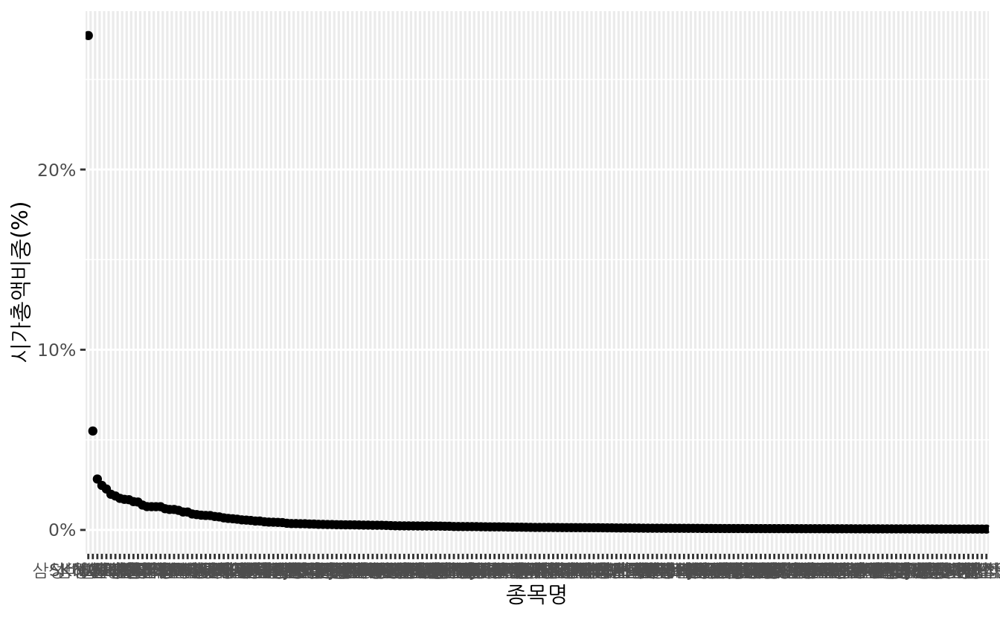
ggplot()함수를 이용해 시각화를 해주도록 하며,reorder()를 통해 시가총액비중으로 \(x\)축을 정리합니다.geom_point()함수를 통해 산점도를 나타냅니다.- \(x\)축과 \(y\)축의 이름을 변경합니다.
scale_y_continuous()함수 내 scales::percent 인자를 입력하여 \(y\) 축을 퍼센트 형식으로 변경합니다.
위 과정을 통해 코스피 시가총액 상위 200 종목의 시가총액비중을 계산 및 시각화 하였습니다. 그러나 \(x\)축에 해당하는 종목이 200개나 되어 종목명이 잘 보이지 않으며, 국내의 경우 삼성전자의 시가총액비중이 지나치게 커 다른 종목들의 비중이 잘 보이지 않습니다. 이를 고려하여 그림을 다시 수정해주도록 합니다.
KOSPI200 %>%
ggplot(aes(x = reorder(종목명, -시가총액비중), y = 시가총액비중)) +
geom_point() +
xlab('종목명') +
ylab('시가총액비중(로그 스케일링)') +
scale_y_log10() +
scale_x_discrete(breaks = KOSPI200[seq(1, 200, by = 5), '종목명']) +
theme(axis.text.x = element_text(angle = 60, hjust = 1)) 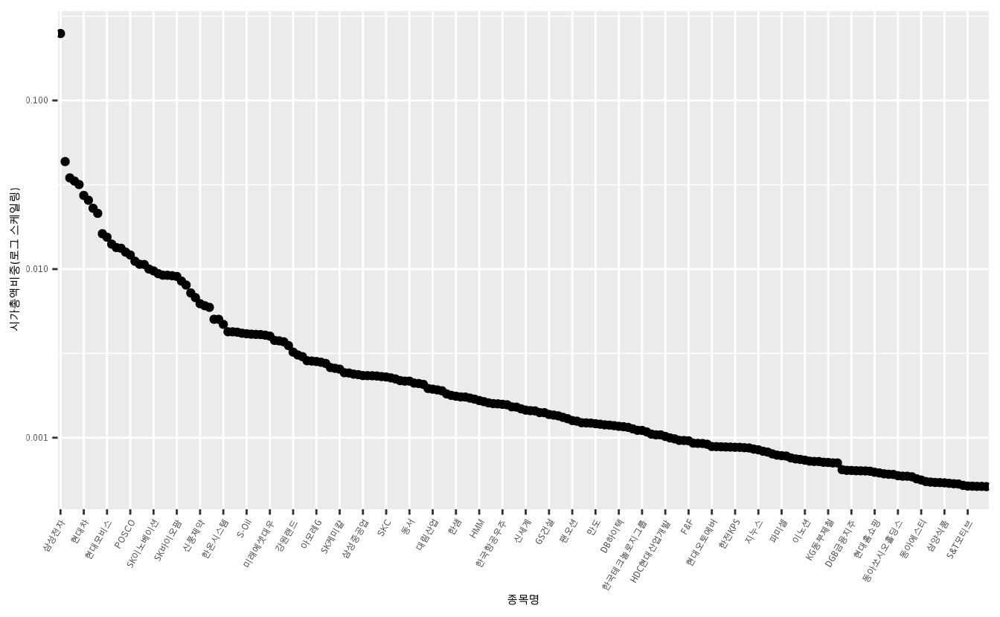
scale_y_log10()함수를 통해 \(y\)축을 로그값으로 스케일링 하였습니다.scale_x_discrete()함수를 통해 \(x\)축에 일부 종목만을 표현하였습니다.theme()내부에element_text()인자를 통해 \(x\)축 글자를 회전시키고 위치를 조정하였습니다.
다음으로 만일 여러분에게 1억이 있을 경우 KOSPI 200을 복제하는 방법을 알아보겠습니다.
KOSPI200 = KOSPI200 %>%
mutate(매수금액 = 100000000 * 시가총액비중,
매수주수 = 매수금액 / `현재가.종가.`)
KOSPI200 %>% select(매수금액, 매수주수) %>% head()## 매수금액 매수주수
## 1 26142166 354.230
## 2 5075716 43.198
## 3 3430585 4.189
## 4 3168316 3.926
## 5 2831671 8.010
## 6 2782746 9.747여러분이 가지고 있는 금액에 시가총액비중을 곱해 각 주식당 매수해야 하는 금액을 구합니다. 그 후 각 금액을 현재가로 나누어 매수해야 하는 주식의 수를 계산합니다.
이론적으로는 계산된 주식수만큼 매수하여야 인덱스를 정확히 복제합니다. 그러나 주식은 1주 단위로 거래할 수 있으므로 소수점 단위로는 거래할 수는 없습니다. 만일 매수주수를 올림처리할 경우 총 매수금액이 보유금액보다 많이질 수 있으므로, 내림처리를 통해 매수주수를 수정해줍니다.
## 매수금액 매수주수
## 1 26142166 354
## 2 5075716 43
## 3 3430585 4
## 4 3168316 3
## 5 2831671 8
## 6 2782746 9floor() 함수를 통해 내림처리를 하였으며, 각 주수만큼 매수할 경우 KOSPI 200 지수를 매우 유사하게 복제할 수 있습니다.
inv_money = KOSPI200 %>% mutate(실제매수금액 = `현재가.종가.` * 매수주수) %>%
summarize(sum(실제매수금액))
print(inv_money)## sum(실제매수금액)
## 1 89387460주수를 내림 처리하였으므로 실제 매수에 사용되는 금액은 1억원 보다 약간 모자르게 되며, 1억과 해당금액의 차이는 현금으로 보유하거나 해당 지수를 추종하는 ETF 및 펀드 투자에 사용해도 됩니다.
11.4.3 팩터를 이용한 인핸스드 포트폴리오 구성하기
위 방법을 통해 포트폴리오를 구성할 경우 이론적으로는 벤치마크와 수익률이 거의 동일합니다. 그러나 약간의 위험을 감수하여 벤치마크 대비 미세한 초과수익을 원하는 수요가 존재하며, 이러한 펀드가 인핸스드 인덱스 펀드입니다. 이를 위해 층화추출법, 비중조절법, 차익거래 등의 전략이 활용되며, 본 책에서는 가장 널리 사용되는 비중조절법에 대해 알아보겠습니다. 그 예제로써 PBR을 이용해 시가총액비중을 조절해보도록 하겠습니다.
먼저 필요한 종목코드, 종목명, PBR, 시가총액비중 열만 선택합니다. 그 후 문자열 형태의 PBR을 숫자 형태로 변경해주며, PBR 데이터가 없어 [-]로 표시되었던 종목의 PBR은 NA로 변경됩니다.
11.4.3.1 단순 가감법
먼저 가장 손쉬운 방법은 PBR의 랭킹을 구한 후, PBR이 낮은 상위 n개 종목에는 일정 비중씩을 더하며, 나머지 종목들에서 해당 비중만큼을 빼는 방법입니다. 몇개의 종목에서 얼마씩의 비중을 조절할지는 투자자의 재량에 달렸으며, 본 예제에서는 상위 100 종목에 각각 5bp를 더해주며, 나머지 100 종목에서 각각 5bp를 빼주도록 하겠습니다.
KOSPI200 = KOSPI200 %>%
mutate(랭킹 = rank(PBR),
조절비중 = ifelse(랭킹 <= 100, 시가총액비중 + 0.0005, 시가총액비중 - 0.0005),
조절비중 = ifelse(조절비중 < 0, 0, 조절비중),
조절비중 = 조절비중 / sum(조절비중),
차이 = 조절비중 - 시가총액비중) ## 종목명 PBR 시가총액비중 랭킹 조절비중
## 1 삼성전자 1.97 0.26142 126.5 0.26090
## 2 SK하이닉스 1.78 0.05076 120.0 0.05025
## 3 LG화학 3.77 0.03431 159.0 0.03380
## 4 삼성바이오로직스 12.26 0.03168 189.0 0.03118
## 5 셀트리온 17.00 0.02832 193.0 0.02781
## 6 NAVER 8.11 0.02783 185.0 0.02733
## 차이
## 1 -0.0005188
## 2 -0.0005036
## 3 -0.0005024
## 4 -0.0005022
## 5 -0.0005020
## 6 -0.0005020## 종목명 PBR 시가총액비중 랭킹 조절비중
## 195 한미반도체 4.14 0.0004859 164.0 0.0000000
## 196 동아쏘시오홀딩스 1.08 0.0004784 92.0 0.0009784
## 197 동원산업 0.77 0.0004768 68.5 0.0009767
## 198 풍산 0.58 0.0004739 36.5 0.0009739
## 199 에스엘 0.58 0.0004719 36.5 0.0009719
## 200 신성이엔지 5.58 0.0004682 174.0 0.0000000
## 차이
## 195 -0.0004859
## 196 0.0004999
## 197 0.0004999
## 198 0.0004999
## 199 0.0004999
## 200 -0.0004682rank()함수를 통해 PBR의 랭킹을 구합니다.- 랭킹이 100 이하일 시, 즉 저PBR 100개 종목에는 시가총액비중에서 5bp씩을 더해주며, 반대로 고PBR 100개 종목에는 5bp 씩을 빼줍니다.
- 시가총액비중이 5bp 미만인 종목에서 5bp를 차감할 경우 비중이 0 미만이 되므로, 이러한 경우는 투자비중을 0으로 만들어 줍니다.
- 3번 결과에 따라 비중의 합이 1과 다르게 되므로, 각각의 비중을 합으로 나누어 값을 다시 계산해 줍니다.
- 시가총액비중과 조절비중의 차이를 계산합니다.
PBR 랭킹이 100 미만인 종목, 즉 저PBR 종목은 시가총액비중 대비 투자비중이 많으며, 이와 반대로 고PBR 종목은 시가총액비중 대비 투자비중이 작습니다. 즉 장기적으로 저PBR 종목이 고PBR 종목 대비 우수한 성과를 보일 경우, 저PBR 종목에 더 높은 비중을 준 해당 포트폴리오 역시 벤치마크 대비 우수한 성과를 기록할 수 있을 것입니다.
KOSPI200 %>%
ggplot(aes(x = reorder(종목명, -시가총액비중), y = 시가총액비중)) +
geom_point() +
geom_point(data = KOSPI200, aes(x = reorder(종목명, -시가총액비중), y = 조절비중),
color = 'red', shape = 4) +
xlab('종목명') +
ylab('비중(%)') +
coord_cartesian(ylim = c(0, 0.03)) +
scale_x_discrete(breaks = KOSPI200[seq(1, 200, by = 5), '종목명']) +
scale_y_continuous(labels = scales::percent) +
theme(axis.text.x = element_text(angle = 60, hjust = 1)) 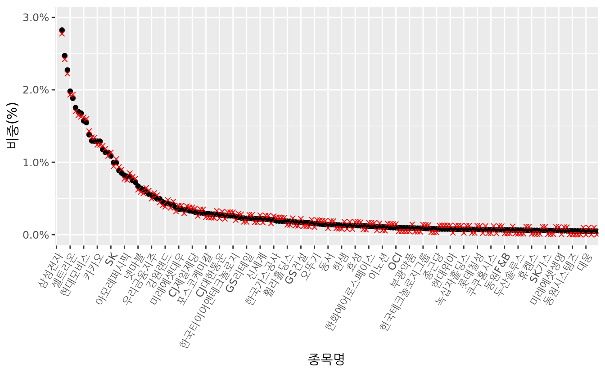
검은색 점은 인덱스 내 시가총액비중이며, 붉은색 엑스표시는 5bp씩 더하거나 뺀 투자비중입니다. 약간씩의 베팅만 했으므로 기초지수와 크게 차이가 없습니다.
KOSPI200_mod = KOSPI200 %>% arrange(PBR)
KOSPI200_mod %>%
ggplot(aes(x = reorder(종목명, PBR), y = 차이)) +
geom_point() +
geom_col(aes(x = reorder(종목명, PBR), y = PBR /10000), fill = 'blue', alpha = 0.2) +
xlab('종목명') +
ylab('차이(%)') +
scale_y_continuous(labels = scales::percent,
sec.axis = sec_axis(~. * 10000, name = "PBR")) +
scale_x_discrete(breaks = KOSPI200_mod[seq(1, 200, by = 10), '종목명']) +
theme(axis.text.x = element_text(angle = 60, hjust = 1))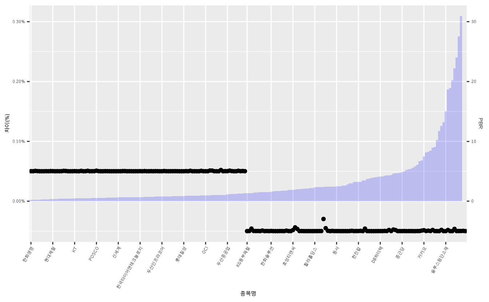
PBR 기준 오름차순을 한 후 그림을 그려보면, PBR이 낮은 종목에는 비중이 추가되며 PBR이 높은 종목에는 비중이 감소되는 것이 쉽게 확인됩니다.
11.4.3.2 팩터에 대한 전체 종목의 틸트
위 방법의 경우 상위 종목과 하위 종목에 동일한 비중을 더하거나 빼주었습니다. 그러나 팩터가 강한 종목의 경우 더욱 많은 비중을 더하고, 팩터가 약한 종목의 경우 더욱 많은 비중을 빼는 등 훨씬 적극적으로 포트폴리오를 구성할 수도 있습니다. 이를 위해서는 먼저 확률밀도함수와 누적분포함수를 이해해야 합니다.
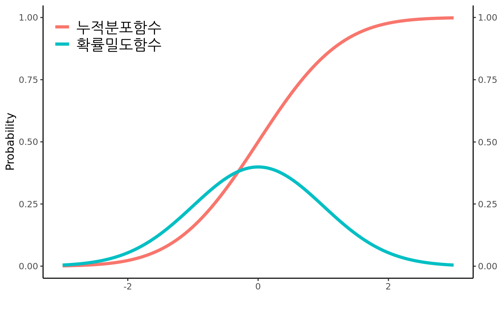
파란색 선은 확률밀도함수로써, 각 \(x\)축에 대한 확률값을 나타냅니다. 빨간색 선은 누적분포함수로써, 각 \(x\)축이 오른쪽으로 이동함에 따른 분포의 누적확률을 계산합니다. 확률의 합은 1이므로 가장 오른쪽은 1의 값을 가지게 됩니다.
이를 [팩터의 결합 방법]에서 계산한 Z-Score에 응용할 수도 있으며, 이 과정은 표 11.16에 나와있습니다.
| 종목 | PBR | 랭킹 | Z-Score X (-1) | 누적확률 | 시가총액비중 | 시총 X 누적확률 | 비중 재계산 | 차이 |
|---|---|---|---|---|---|---|---|---|
| A | 0.50 | 1 | 1.26 | 0.90 | 20.69% | 18.56% | 33.10% | 12.38% |
| B | 0.70 | 2 | 0.63 | 0.74 | 31.03% | 22.86% | 40.72% | 9.68% |
| C | 1.00 | 3 | 0.00 | 0.50 | 18.97% | 9.48% | 16.89% | -2.07% |
| D | 1.20 | 4 | -0.63 | 0.26 | 13.79% | 3.64% | 6.48% | -7.32% |
| E | 1.50 | 5 | -1.26 | 0.10 | 15.52% | 1.60% | 2.85% | -12.67% |
- 각각의 PBR에 대해 랭킹을 구합니다.
- 랭킹을 바탕으로 Z-Score를 구하며, 결과에 (-1)을 곱해줍니다. 이는 랭킹이 높은 종목의 경우 Z-Score가 음수로 나오므로, 해당 종목의 누적확률 값을 높게하기 위해 양수로 전환해주는 것입니다.
- 구해진 Z-Score를 바탕으로 누적확률을 구합니다. 랭킹이 높은 종목, 즉 저PBR일 수록 해당 값이 크게 나옵니다.
- 지수 내 시가총액비중에 누적확률값을 곱해줍니다. 저PBR 종목일수록 원래의 시가총액비중과 비슷하게 유지되며, 고PBR 종목의 경우 시가총액비중 대비 훨씬 낮을 값을 보입니다.
- 투자비중의 합이 1이 되도록 재표준화를 해줍니다.
- 각 종목의 차이를 보면, PBR이 낮을수록 증가되는 비중이 크며, PBR아 높을수록 감소되는 비중 역시 큽니다.
이처럼 Z-Score와 누적확률을 이용할 경우 훨씬 팩터에 대한 노출을 크게 할 수 있습니다. 이번에는 KOSPI 200 전 종목을 대상으로 PBR 대상 팩터 틸트 포트폴리오를 구성하도록 하겠습니다.
KOSPI200_tilt = KOSPI200 %>%
select(종목명, PBR, 시가총액비중, 랭킹) %>%
mutate(zscore = -scale(랭킹),
cdf = pnorm(zscore),
투자비중 = 시가총액비중 * cdf,
투자비중 = 투자비중 / sum(투자비중),
차이 = 투자비중 - 시가총액비중)## 종목명 PBR 시가총액비중 랭킹 zscore
## 1 삼성전자 1.97 0.26142 126.5 -0.4492
## 2 SK하이닉스 1.78 0.05076 120.0 -0.3369
## 3 LG화학 3.77 0.03431 159.0 -1.0108
## 4 삼성바이오로직스 12.26 0.03168 189.0 -1.5291
## 5 셀트리온 17.00 0.02832 193.0 -1.5982
## 6 NAVER 8.11 0.02783 185.0 -1.4600
## cdf 투자비중 차이
## 1 0.32663 0.210228 -0.051194
## 2 0.36809 0.045998 -0.004759
## 3 0.15606 0.013181 -0.021125
## 4 0.06312 0.004923 -0.026760
## 5 0.05500 0.003834 -0.024483
## 6 0.07214 0.004943 -0.022885## 종목명 PBR 시가총액비중 랭킹 zscore
## 195 한미반도체 4.14 0.0004859 164.0 -1.0972
## 196 동아쏘시오홀딩스 1.08 0.0004784 92.0 0.1469
## 197 동원산업 0.77 0.0004768 68.5 0.5529
## 198 풍산 0.58 0.0004739 36.5 1.1058
## 199 에스엘 0.58 0.0004719 36.5 1.1058
## 200 신성이엔지 5.58 0.0004682 174.0 -1.2699
## cdf 투자비중 차이
## 195 0.1363 0.0001630 -0.0003229
## 196 0.5584 0.0006577 0.0001793
## 197 0.7098 0.0008333 0.0003565
## 198 0.8656 0.0010100 0.0005360
## 199 0.8656 0.0010057 0.0005338
## 200 0.1021 0.0001176 -0.0003506- 먼저 필요한 열만 선택합니다.
scale()함수를 통해 Z-Score를 구하며, (-1)을 곱해줍니다.pnorm()함수를 통해 누적확률 값을 구해집니다.- 시가총액비중에 누적확률을 곱해 새로운 투자비중을 구한 후, 이를 재표준화 해줍니다.
- 틸트된 비중과 기존 비중간의 차이를 구합니다.
위 방법은 시가총액비중이 클수록, 그리고 Z-Score의 절대값이 클수록 비중의 차이가 많이 발생하게 됩니다. 각 종목의 투자비중을 그림으로 나타내겠습니다.
KOSPI200 %>%
ggplot(aes(x = reorder(종목명, -시가총액비중), y = 시가총액비중)) +
geom_point() +
geom_point(data = KOSPI200_tilt, aes(x = reorder(종목명, -시가총액비중), y = 투자비중),
color = 'red', shape = 4) +
xlab('종목명') +
ylab('비중(%)') +
coord_cartesian(ylim = c(0, 0.03)) +
scale_x_discrete(breaks = KOSPI200[seq(1, 200, by = 5), '종목명']) +
scale_y_continuous(labels = scales::percent) +
theme(axis.text.x = element_text(angle = 60, hjust = 1)) 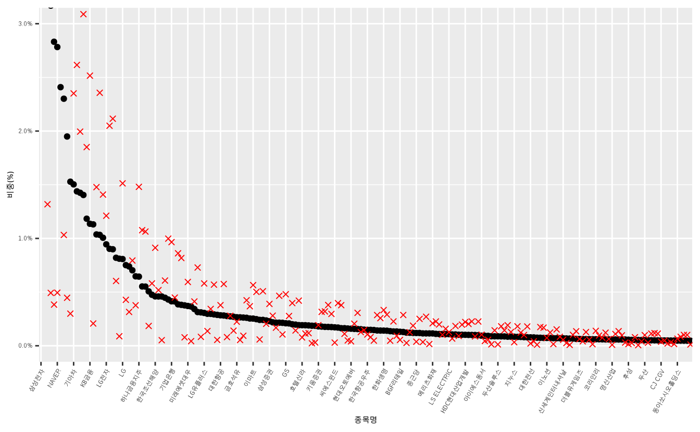
검은색 점은 인덱스 내 시가총액비중이며, 붉은색 엑스표시는 새롭게 구한 투자비중입니다. 단순이 동일한 비중을 더하거나 빼는것 보다 비중 차이의 폭이 훨씬 크며, 이는 전체 포트폴리오가 팩터에 노출된 정도가 크다는 것을 의미합니다.
그러나 실무에서는 이러한 차이가 지나치게 벌어지는 것을 방지하기 위한 제약이 있습니다. 그 예로써 종목당 시가총액비중과 투자비중의 차이가 50bp 이상이 되지 않는 제약이 있는 경우를 생각해봅시다. (제약을 더 크게 설정할 수록, 지수 대비 베팅의 크기가 커집니다.)
KOSPI200_tilt %>%
ggplot(aes(x = reorder(종목명, -시가총액비중), y = 차이)) +
geom_point() +
geom_hline(aes(yintercept = 0.005), color = 'red') +
geom_hline(aes(yintercept = -0.005), color = 'red') +
xlab('종목명') +
ylab('비중 차이(%)') +
scale_x_discrete(breaks = KOSPI200[seq(1, 200, by = 5), '종목명']) +
scale_y_continuous(labels = scales::percent) +
theme(axis.text.x = element_text(angle = 60, hjust = 1)) 
시가총액이 큰 종목의 경우 허용치인 50bp를 넘어가는 경우가 다수 존재합니다. 이를 방지하기 위해 비중에 제약조건을 두어야 합니다. 예를 들어 삼성전자의 경우 둘 간의 비중의 차이가 -0.0512 로 지나치게 크므로 [시가총액비중 - 50bp] 가 투자되도록 변경해 줍니다. 타 종목 역시 이와 동일하게 제약조건을 추가해 줍니다.
KOSPI200_tilt = KOSPI200_tilt %>%
mutate_at(vars(투자비중), list(~ifelse(차이 < -0.005, 시가총액비중 - 0.005, 투자비중))) %>%
mutate_at(vars(투자비중), list(~ifelse(차이 > 0.005, 시가총액비중 + 0.005, 투자비중))) %>%
mutate(투자비중 = 투자비중 / sum(투자비중),
차이 = 투자비중 - 시가총액비중)
head(KOSPI200_tilt)## 종목명 PBR 시가총액비중 랭킹 zscore
## 1 삼성전자 1.97 0.26142 126.5 -0.4492
## 2 SK하이닉스 1.78 0.05076 120.0 -0.3369
## 3 LG화학 3.77 0.03431 159.0 -1.0108
## 4 삼성바이오로직스 12.26 0.03168 189.0 -1.5291
## 5 셀트리온 17.00 0.02832 193.0 -1.5982
## 6 NAVER 8.11 0.02783 185.0 -1.4600
## cdf 투자비중 차이
## 1 0.32663 0.23829 -0.023132
## 2 0.36809 0.04275 -0.008012
## 3 0.15606 0.02723 -0.007072
## 4 0.06312 0.02480 -0.006887
## 5 0.05500 0.02167 -0.006649
## 6 0.07214 0.02121 -0.006614mutate_at()함수를 이용해 시가총액비중과 투자비중의 차이가 50bp 미만일 경우 투자비중을 [시가총액 - 50bp]로 변경해주며, 50bp 초과일 경우 [시가총액 + 50bp]로 변경해줍니다.- 재표준화 작업을 거쳐준 후 차이를 다시 계산합니다.
위 방법을 통해 차이가 50bp가 되도록 강제로 설정하였으나, 재표준화를 거치는 과정에서 차이가 50bp를 넘는 종목이 다시 발생하게 됩니다. 모든 종목의 차이가 50bp 이내가 되도록 해당 작업을 반복해줍니다.
while (max(abs(KOSPI200_tilt$차이)) > (0.005 + 0.00001)) {
KOSPI200_tilt = KOSPI200_tilt %>%
mutate_at(vars(투자비중), list(~ifelse(차이 < -0.005, 시가총액비중 - 0.005, 투자비중))) %>%
mutate_at(vars(투자비중), list(~ifelse(차이 > 0.005, 시가총액비중 + 0.005, 투자비중))) %>%
mutate(투자비중 = 투자비중 / sum(투자비중),
차이 = 투자비중 - 시가총액비중)
}
head(KOSPI200_tilt)## 종목명 PBR 시가총액비중 랭킹 zscore
## 1 삼성전자 1.97 0.26142 126.5 -0.4492
## 2 SK하이닉스 1.78 0.05076 120.0 -0.3369
## 3 LG화학 3.77 0.03431 159.0 -1.0108
## 4 삼성바이오로직스 12.26 0.03168 189.0 -1.5291
## 5 셀트리온 17.00 0.02832 193.0 -1.5982
## 6 NAVER 8.11 0.02783 185.0 -1.4600
## cdf 투자비중 차이
## 1 0.32663 0.25641 -0.005007
## 2 0.36809 0.04576 -0.005001
## 3 0.15606 0.02931 -0.005001
## 4 0.06312 0.02668 -0.005001
## 5 0.05500 0.02332 -0.005001
## 6 0.07214 0.02283 -0.005001위와 동일한 코드에 while() 구문을 활용하여 둘 간의 차이가 50bp 보다 클 경우 해당 작업을 계속해서 반복하며, 결과적으로 차이가 거의 50bp에 수렴합니다.
KOSPI200_tilt %>%
ggplot(aes(x = reorder(종목명, -시가총액비중), y = 차이)) +
geom_point() +
geom_hline(aes(yintercept = 0.005), color = 'red') +
geom_hline(aes(yintercept = -0.005), color = 'red') +
xlab('종목명') +
ylab('비중 차이(%)') +
scale_x_discrete(breaks = KOSPI200[seq(1, 200, by = 5), '종목명']) +
scale_y_continuous(labels = scales::percent) +
theme(axis.text.x = element_text(angle = 60, hjust = 1)) 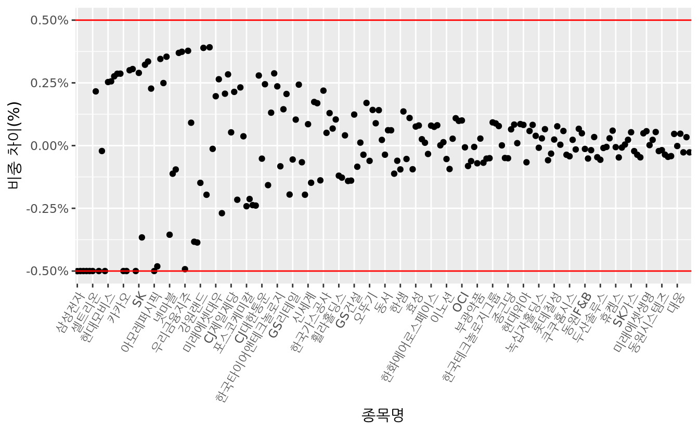
모든 종목이 제약조건 내에 들어오게 되었습니다.
KOSPI200 %>%
ggplot(aes(x = reorder(종목명, -시가총액비중), y = 시가총액비중)) +
geom_point() +
geom_point(data = KOSPI200_tilt, aes(x = reorder(종목명, -시가총액비중), y = 투자비중),
color = 'red', shape = 4) +
xlab('종목명') +
ylab('비중(%)') +
coord_cartesian(ylim = c(0, 0.03)) +
scale_x_discrete(breaks = KOSPI200[seq(1, 200, by = 5), '종목명']) +
scale_y_continuous(labels = scales::percent) +
theme(axis.text.x = element_text(angle = 60, hjust = 1)) 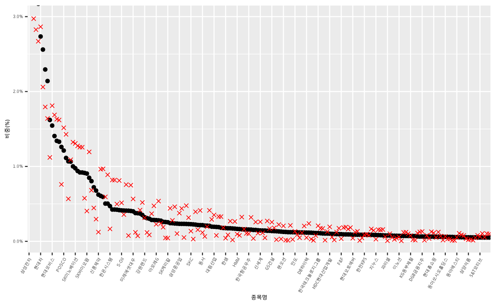
제약조건으로 인해 기초지수와의 차이가 줄어들었지만, 기존 단순가감법 보다는 적극적으로 베팅이 되었습니다.
KOSPI200_tilt_mod = KOSPI200_tilt %>% arrange(PBR)
KOSPI200_tilt_mod %>%
ggplot(aes(x = reorder(종목명, PBR), y = 차이)) +
geom_point() +
geom_col(aes(x = reorder(종목명, PBR), y = PBR /2000), fill = 'blue', alpha = 0.2) +
xlab('종목명') +
ylab('차이(%)') +
scale_y_continuous(labels = scales::percent,
sec.axis = sec_axis(~. * 2000, name = "PBR")) +
scale_x_discrete(breaks = KOSPI200_mod[seq(1, 200, by = 10), '종목명']) +
theme(axis.text.x = element_text(angle = 60, hjust = 1))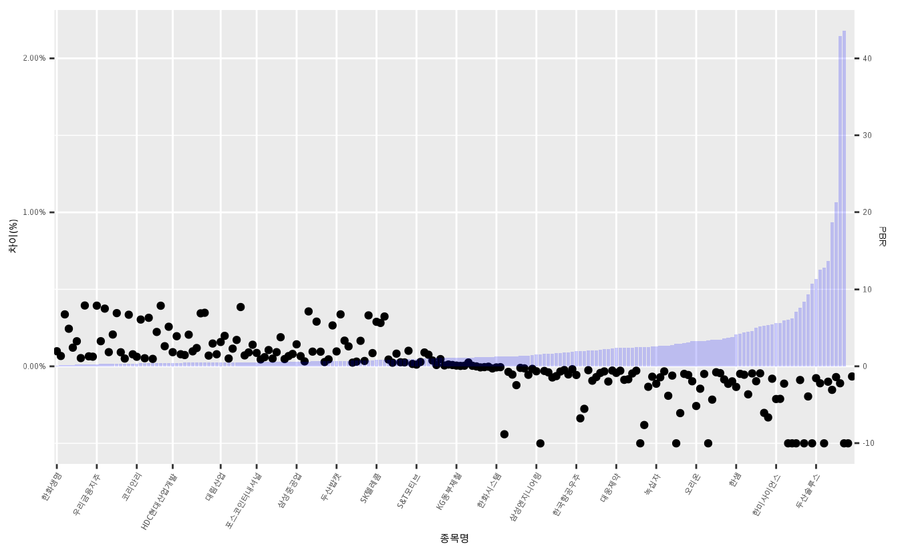
PBR에 따른 비중의 차이 역시 단순 가감법보다 훨씬 증가했습니다. 실무에서는 단순히 PBR처럼 하나의 지표만 살펴보기 보다는 앞서 살펴본 멀티팩터를 이용해 비중을 틸트하기도 하며, 좀 더 다양한 제약조건을 추가하기도 합니다.
References
Choueifaty, Yves, and Yves Coignard. 2008. “Toward Maximum Diversification.” The Journal of Portfolio Management 35 (1): 40–51.
Choueifaty, Yves, Tristan Froidure, and Julien Reynier. 2013. “Properties of the Most Diversified Portfolio.” Journal of Investment Strategies 2 (2): 49–70.
Qian, Edward. 2011. “Risk Parity and Diversification.” The Journal of Investing 20 (1): 119–27.
엄밀하게는 mrc가 아닌 rc가 맞는 용어입니다.↩︎